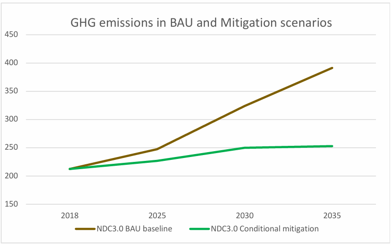

Despite its small size, São Tomé and Príncipe reaffirms its commitment to the Global Climate Agenda as a global response to the climate crisis. More than half of the national land area consists of protected and uninhabited forest areas, which are also a carbon sink. However, this very fact poses a major challenge to achieving carbon neutrality by 2050 under the Paris Agreement, as a simplistic analysis creates the false impression of a lower population density than is actually the case, meaning that the efforts required may be less than necessary. Although our contribution to global emissions is small, our responsibility to present and future generations is unequivocal.
The natural heritage of São Tomé and Príncipe is a national and global asset. In 2012, UNESCO designated Príncipe Island as a Biosphere Reserve, and in 2025, it also designated São Tomé Island, making our country the first state whose entire territory is part of the World Network of Biosphere Reserves. This distinction reinforces the duty to manage forests, terrestrial and marine ecosystems sustainably, preserving biodiversity and supporting human development.
These two distinctions aim to promote the conservation of ecosystems while encouraging the sustainable development of local communities. These two Biosphere Reserves cover not only forests and environmentally sensitive and protected areas, but also terrestrial and marine ecosystems, preserving biodiversity and supporting human development, recognising the interdependence of communities' relationship with the land and sea in maintaining biodiversity and balanced and sustainable long-term development. This is recognition not only of national efforts, but also of the constant and necessary international support to ensure the implementation and success of national, district and regional strategies and plans that contribute to the fulfilment of these goals, in a small archipelagic country, where insularity and scale limit industries and economic activities that depend on the external market, whether for importing fossil fuels and inputs or for exporting their products.
NDC 3.0 is the result of a technical and participatory process and establishes, with 2018 as the base year, a 35.4% reduction in emissions compared to the reference scenario in 2035. In the electricity sector, the country has defined a transition path that combines efficiency, loss reduction, storage and expansion of renewables, increasing their share from around 4% in 2024 to at least 50% in 2035. This ambition is linked to national priorities: poverty and risk reduction, decent employment, reliable and affordable energy, resilience of infrastructure and public services, and sustainability of public finances.
We recognise that, even with enhanced mitigation, the impacts will continue to require adaptation. NDC 3.0 presents adaptation priorities with cost estimates in strategic sectors — infrastructure, health, tourism, ecosystems and biodiversity — and integrates cross-cutting issues, reflecting our commitment to resilient and inclusive development. The adaptation measures and targets presented in this NDC, along with the estimated costs, will be updated following the finalization of the National Adaptation Plan (NAP) process in 2026, recognizing that both the measures and their associated costs may be subject to revision.
Pilot projects and the country's openness to innovating and taking advantage of new solutions adapted to the territory, such as generating electricity from the ocean thermal gradient off the coast of São Tomé Island and implementing soft electric mobility with the introduction of electric bicycles adapted to the reality of Príncipe Island, with solar charging stations, are proof of the national commitment to energy transition.
Legislation that is up to date and in line with global best practices for the protection of the environment and humanity, such as that linked to the eradication of single-use plastics and conventional plastic bags, customs incentives for equipment associated with renewable energies, more efficient appliances and vehicles, or higher taxes on used, older and less efficient combustion vehicles, are examples of how an island state that is highly dependent on external support can remain focused on the commitments it has made, particularly under climate conventions and the Paris Agreement.
The realisation of this ambition is conditional on adequate, predictable and accessible international support, financing, technology transfer and capacity building, in line with the specific circumstances of São Tomé and Príncipe's insularity, scale and fiscal space. Implementation will be accompanied by monitoring, reporting and verification arrangements compatible with the Enhanced Transparency Framework, operationalised through the National Transparency System.
With a sense of responsibility and cooperation, we will continue to work with our institutions and partners to transform vulnerability into resilience and opportunity, promoting socio-economic development in harmony with environmental protection, biodiversity conservation and sustainable management of natural resources, strengthening adaptation to climate change and reducing land degradation.
The Government of São Tomé and Principe wishes to acknowledge the valuable support provided by its development partners. The United Nations agencies - UNDP, UNICEF, UNFPA, and the Resident Coordinator’s Office (RCO) - have played a pivotal role in offering both technical and financial assistance throughout the NDC 3.0 process. Their contributions have strengthened national capacities and fostered inclusive stakeholder engagement. The Government also extends its appreciation to the NDC Partnership for its strategic coordination and targeted support, which have been instrumental in aligning national climate ambitions with sustainable development priorities.
Finally, São Tomé and Príncipe is finalising its new greenhouse gas inventory and National Adaptation Plan. A revision of this NDC will therefore be presented, adjusting it as much as possible and as closely as possible to reality, the national contribution to limiting global warming, reflecting the maximum level of ambition that the country can achieve in terms of emission cuts and increased carbon removals, as well as strategies to adapt to climate change, identifying short-, medium- and long-term goals and the respective support needs for their implementation.
30 September 2025
Minister of Environment, Youth and Sustainable Tourism, representing national interests and the Global Climate Agenda
Acronym |
Definition |
ACRE |
Access to Clean and Sustainable Electricity (Project) |
AFOLU |
Agriculture, Forestry, and Other Land Use |
AGER |
General Regulatory Authority |
BAU |
Business As Usual |
BUR |
Biennial Update Reports |
CMIP6 |
Coupled Model Intercomparison Project Phase 6 |
NC |
National Communication |
CNMC |
National Committee for Climate Change |
CONPREC |
National Council for Disaster Preparedness and Response |
DAAC |
Directorate for the Environment and Climate Action |
DADR |
Directorate for Agriculture and Rural Development |
DCI |
Directorate for Trade and Industry |
DCS-STP |
Solar Coverage Sizing in São Tomé and Príncipe |
DFB |
Directorate of Forests and Biodiversity |
DGRNE |
Directorate-General for Natural Resources and Energy |
DRACN |
Regional Directorate for the Environment and Nature Conservation |
ECOWAS |
Economic Community of West African States |
EMAE |
São Tomé and Príncipe Water and Electricity Company |
ENRRD |
National Strategy for Disaster Risk Reduction |
ETF |
Enhanced Transparency Framework - National Transparency System for Climate Change |
EWS |
Early Warning System |
GACMO |
Greenhouse Gas Abatement Cost Model |
GBV |
Gender-based violence |
GDP |
Gross Domestic Product |
GHG |
Greenhouse Gases |
WG |
Working Group |
H&OT |
Housing and Spatial Planning |
HFC |
Hydrofluorocarbons |
ICTU |
Information Necessary for Clarity, Transparency, and Understanding |
IGEE |
Greenhouse Gas Inventory |
ILO |
International Labour Organisation |
INJ |
National Youth Institute |
INM |
National Institute of Meteorology |
INPG |
National Institute for Gender Promotion |
IPCC |
Intergovernmental Panel on Climate Change |
LED |
Light Emitting Diode |
LULUCF |
Land Use, Land-Use Change and Forestry |
MAJTS |
Ministry of Environment, Youth and Sustainable Tourism |
MBT (TMB) |
Mechanical Biological Treatment |
MIRNA |
Ministry of Infrastructure, Natural Resources and Environment |
MRV |
Monitoring, Reporting and Verification - National Transparency System for Climate Change |
NAPA |
National Adaptation Programme of Action |
NDC-STP |
Nationally Determined Contributions - São Tomé and Príncipe |
PADRSE |
Action Plan for Decarbonisation and Resilience of the Energy Sector |
PAEV |
Green Energy Acceleration Plan |
PANEE |
National Energy Efficiency Action Plan (PANEE) |
PANER |
National Renewable Energy Action Plan (PANER) |
PGIR |
Integrated Waste Management Plan |
PNAECLM |
National Action Plan and Strategy for Clean and Modern Cooking |
PNAS (HNAP) |
National Health Adaptation Plan to Climate Change (Health National Adaptation Plan) |
PNGIRSU |
National Plan for Integrated Solid Waste Management |
PNOT |
National Land Use Plan |
PNRFP |
National Plan for Forest and Landscape Restoration |
PNSA |
National Strategy and Action Plan for Environmental Sanitation |
POOC |
Coastal Zone Management Plans |
QA/QC (GQ/CQ) |
Quality Assurance / Quality Control |
RAP |
Autonomous Region of Príncipe |
RNEC |
National Fuel Economy Roadmap |
RNME |
National Roadmap for Electric Mobility |
RRD |
Disaster Risk Reduction |
RSU |
Municipal Solid Waste |
SADD |
Data and Documentation Archiving System |
SIDS |
Small Island Developing States |
SN-MRV |
National System - Monitoring, Reporting and Verification |
SNPCB |
National Civil Protection and Fire Service |
SNR |
National Waste System |
SNT |
National Transparency System |
STP |
São Tomé and Príncipe |
UNDP |
United Nations Development Programme |
UNFCCC |
United Nations Framework Convention on Climate Change |
WASH |
Water, Sanitation, and Hygiene |
WWTP |
Wastewater Treatment Plant |
São Tomé and Príncipe, and all Parties to the Paris Agreement, have committed to preparing and submitting to the United Nations Framework Convention on Climate Change (UNFCCC) a package of documents on a periodic basis, either mandatory or voluntary, with a view to implementing national and/or regional programmes with measures to mitigate climate change and adapt to it. The Nationally Determined Contribution (NDC) is one such document and is mandatory, whereby each Party sets out the national climate goals (mitigation and, optionally, adaptation) that the country commits to achieving in the global context.
São Tomé and Príncipe recognises the urgency and ambition needed to address the climate crisis and notes that, despite international efforts, progress on mitigation, adaptation and financing remains insufficient given the scale of the challenge. As a Small Island Developing State (SIDS), the country contributes negligibly to global GHG emissions but faces disproportionate impacts on people, infrastructure, ecosystems and the economy, requiring robust and coordinated responses.
In this context, the country reaffirms its commitment to the Paris Agreement and submits its Nationally Determined Contribution (NDC 3.0) to the Secretariat of the United Nations Framework Convention on Climate Change, in accordance with the obligations of Article 4 of the Agreement (decision 1/CP.21) and the guidance on mitigation (decision 4/CMA.1, including information to facilitate clarity, transparency and understanding — ICTU), also taking into account the Enhanced Transparency Framework (decision 18/CMA.1) and national circumstances.
This NDC includes a chapter on adaptation, detailing the country's vulnerabilities, plans and resilience needs to adapt to the impacts of climate change, estimating in an indicative manner and based on international indicators, the financial support needs for its implementation.
The NDC of São Tomé and Príncipe presents a target of a 35.4% reduction in emissions compared to the reference scenario in 2035, with mitigation measures and 40 adaptation measures, at an estimated total cost of USD 603.95 million by 2035, of which USD 189.70 million is for mitigation and USD 414.25 million is for adaptation.
On 31 December 1998, São Tomé and Príncipe ratified the United Nations Framework Convention on Climate Change through Assembly Resolution No. 9/98 and Presidential Decree No. 6/98. Since then, it has signed and ratified agreements and protocols in this area, such as the Paris Agreement in 2015. In line with these UNFCCC instruments, it has submitted three National Communications (NC) (2005, 2012, and 2019), two Nationally Determined Contributions (2015 and 2021) and a Biennial Update Report (BUR) (2022), joining the Parties to the UNFCCC in the collective effort to combat and adapt to climate change with this additional Nationally Determined Contribution, São Tomé and Príncipe's NDC 3.0.
The Democratic Republic of São Tomé and Príncipe is a small island developing state (SIDS) located in the Gulf of Guinea, off the west coast of Africa, close to Gabon, Equatorial Guinea, Cameroon and Nigeria. The country consists of two main islands, São Tomé and Príncipe, as well as smaller islets: Rolas, Cabras, Bombom, Caroço (Boné de Joker), Tinhosa Grande and Tinhosa Pequena. The total area of the country is 1,001 km², with 859 km² corresponding to the island of São Tomé and 142 km² to the island of Príncipe, with a distance of about 160 km between them.
Both islands are volcanic in origin and are part of an eruptive chain that stretches across the Gulf of Guinea, from the Cameroon Mountains to Saint Helena. The island of São Tomé is situated on an oceanic plate, at a depth of about 3,000 metres. These volcanic characteristics directly influence the topography and soil composition of the islands, making the local vegetation and biodiversity quite specific, adapted to the environmental conditions of the archipelago. The territory is home to diverse ecosystems, such as cloud forests, high-altitude forests, secondary forests, shade forests, dry forests, savannahs and mangroves. The fauna, especially the birds present on the island, is very rich in diversity, harbouring a considerable number of endemic species.
The climate of São Tomé and Príncipe is tropical humid, containing different microclimatic zones, marked by two main seasons: a rainy season, which lasts about nine months, from September to May, with frequent rainfall, and a shorter dry season, known as Gravana, which occurs from June to August, with milder temperatures.
With UNESCO’s 2012 designation of Príncipe and the 2025 recognition of São Tomé, the country has become the world’s first whose entire territory is inscribed as a Biosphere Reserve,— an acknowledgment of São Tomé and Príncipe’s global importance as a steward of exceptional island endemism, intact rainforests, and blue-carbon ecosystems whose conservation benefits extend far beyond its shores1.
The General Population and Housing Census – 20242 counts 53,535 households and 209,161 inhabitants residing in the national territory (3.9 people/household).
The population is unevenly distributed across the territory, with an average density of 209 inhabitants per km². The district of Água-Grande, the country's capital, has the highest population density, 4,888 inhabitants/km², while the district of Caué, which occupies the largest territorial area, has only 28 inhabitants/km². It should be noted that in 40 years, the average annual growth rate slowed from 2.0% (1981) to 1.3% (2024) and urbanisation has intensified: the urban population has increased from 54.5% (2001) to 67.2% (2024), reflecting the concentration of services and opportunities in urban areas and placing greater pressure on energy demand, mobility and infrastructure.
In recent years, São Tomé and Príncipe has made significant progress in terms of social development. As a result, the country's Human Development Index (HDI) rose from 0.535 to 0.637 between 2005 and 2023, representing a change of 19.1%, placing the country in the medium human development category3 .
São Tomé and Príncipe is a small, low-to-middle-income, insular and remote economy with a narrow productive base and high scale and logistics costs. The economic structure is dominated by services, followed by agriculture, forestry and fisheries, and a small manufacturing industry. The business environment is constrained by fragile infrastructure, expensive and unreliable electricity, limited connectivity, and high exposure to external shocks and climate risk.
In 2024, real GDP will have grown by around 0.9%, sustained by increased electricity generation and the recovery of tourism after the COVID-19 pandemic, although with average inflation of 14.5% which has penalised real household income. Projections point to an acceleration in growth of 3.1% in 2025 and an average of 4.5% in the medium term, driven by agricultural exports, investment in infrastructure, tourism and reforms in the energy sector.
Despite a GDP per capita of USD 3,245, social vulnerabilities persist, with around 45% of the population living below USD 3.65/day (PPP 2017) and inequality remaining high (Gini ~40.7). On the public accounts side, fiscal space is limited and historical dependence on external grants has been declining, requiring fiscal consolidation and greater mobilisation of private investment4 .
This context defines development priorities: reducing poverty and creating decent jobs, ensuring reliable and affordable energy, strengthening climate resilience, and stabilising public finances. NDC 3.0 aligns with these priorities by accelerating renewables and storage (to reduce costs and dependence on imported fuels), implementing energy efficiency and loss reduction (freeing up capacity and lowering energy bills), and promoting social inclusion (LEDs, clean stoves, self- consumption, and electrification of public services with a focus on vulnerable households). Thus, the proposed climate action is not parallel to development: it is a means to increase competitiveness, protect household income and make growth more resilient and sustainable.
São Tomé and Príncipe is highly vulnerable to climate change due to the fragility of its island ecosystems, low level of socioeconomic development, and weak capacity to adapt to the direct and indirect impacts of extreme weather events.
In fact, in São Tomé and Príncipe, there is growing evidence of climate impact: intense rainfall with flash floods, storms with strong winds and coastal flooding/erosion. An example of this was the state of calamity declared in December 2021 after severe flooding, which damaged infrastructure and disrupted the normal functioning of socio-economic activities. There is also gradual warming and greater irregularity/seasonality of rainfall, with effects on water resources, agriculture, infrastructure and urban services. Climate models indicate that average temperatures have increased by 0.2 to 0.4 °C in recent decades5 .
CMIP6 projections point to continued warming throughout the century and greater variability in precipitation, increasing the likelihood of extreme events. By mid-century, average temperatures are projected to increase by 0.8 to 1.1 °C, and could exceed 3 °C by the end of the century under high emission trajectories. This includes an increase in the frequency and duration of heat waves.
Sea level rise exacerbates the risk to low-lying coastal areas and critical assets. World Bank estimates indicate expected annual losses from flooding of 1.9% of GDP in 2020, 2.8% in 2050 and 4.1% in 2080 if there is no adaptation6 . Given this scenario, inaction is not an option: the costs of repairing damage and losses will far exceed investments in early adaptation. Investing in urban drainage, resilient agricultural practices, sustainable water management, coastal protection and early warning systems is not only an environmental necessity, but also a strategic opportunity to protect lives, reduce vulnerabilities and ensure the sustainable development of São Tomé and Príncipe.
To address the adverse effects of climate change, Decree No. 13/2012 established the National Committee on Climate Change, which ensures interministerial coordination of climate policy. The CNMC Secretariat operates within the Directorate for Environment and Climate Action, which liaises with the National Institute of Meteorology and sectoral ministries (energy, agriculture, public works, health, finance, education, planning), ensuring policy integration and technical coherence.
In order to ensure disaster risk management, CONPREC was created by Decree-Law No. 17/2011. CONPREC is responsible for prevention, preparedness and response to flash floods, storms and coastal risks, in line with the adaptation agenda.
In the electricity sector, the basic framework is the Legal Regime for the Organisation of the Electricity Sector (Decree-Law No. 26/2014), with AGER as the regulator and EMAE as the integrated concessionaire. To enable the penetration of renewables and the contracting of independent producers, a special and transitional regime for the acquisition of energy from renewable sources (DL No. 1/2020) is in force. Energy and climate planning is implemented through PANER (renewables) and PANEE (efficiency), which set targets for RE penetration, loss reduction and efficiency improvement and serve as the basis for the BAU and mitigation scenarios of this NDC 3.0.
NDC 3.0 strengthens existing governance, consolidates coordination mechanisms and aligns mitigation and adaptation objectives with the legal and regulatory framework in force, ensuring transparency, sectoral coherence and implementation capacity.
Measurable progress has been made in the planning and public policy necessary for the transformational change to significantly reduce GHG emissions in São Tomé and Príncipe.
This progress includes updating the NDC (2021), operationalising the National Committee for Climate Change, completing the PANER (renewables) and PANEE (efficiency), and a review and consolidation of these two plans in light of the economic, social and environmental context, together with the PAEV, PNAECLM and RNME, among other documents, into a single Action Plan for Decarbonisation and Resilience of the Electricity Sector (PADRSE) as a reference for the next decade, aligned with the time horizon of this NDC and therefore an important reference.
NDC 3.0 focuses on mitigation in the sectors with the greatest contribution to national emissions and to the country's sustainable development, such as energy, transport, waste and AFOLU, and this national effort is clearly evident in the growing integration of climate actions and initiatives into national, district and regional, sectoral and ministerial plans, in these sectors and subsectors, as well as in areas such as education, health, youth and tourism, in line with the transparency framework (ETF) to strengthen MRV/BTR reporting, monitoring and verification.
The national inventory indicates that total ex-LULUCF emissions were 212,5 ktCO₂e in 20187 , with the energy sector accounting for around 76% of the country's total emissions, of which 52% relate to the energy industry and 28% to transport. With regard to transport, it should be noted that land transport accounts for 76% of the sector's total emissions. Agriculture and livestock contribute 11% and waste 9% to the country's total GHG emissions (ex-LULUCF). At the same time, forest removals remain substantial, at -516.01 ktCO₂e in 2018.
Table 1 – Evolution of GHG emissions by sector, 2012 - 2018
Sector/ktCO2e |
2012 |
2016 |
2018 |
2018 HFC |
1 Energy |
118.18 |
155.81 |
160.95 |
-- |
2 Industrial Processes |
-- |
-- |
-- |
7.52 |
3 AFOLU: |
||||
|
- Agriculture and Livestock |
21.39 |
23.45 |
24.41 -- |
|
|
- FOLU |
-418.86 |
-523.26 |
-516.01 |
-- |
4 Waste |
16.57 |
18.68 |
19.62 -- |
|
TOTAL (excl. FOLU) |
156.14 |
197.94 |
204.98 |
7.52 |
TOTAL (incl. FOLU) |
-262.71 |
-325.32 |
-303.52 |
|
Despite institutional progress, the pace of effective emissions reduction has been moderate, constrained by limitations in capacity, available technologies and practices, and financing, as well as by the need for better MRV coverage for full accounting of results. Nevertheless, the introduction of renewables (hydro and solar), efficiency programmes (lighting and losses) and sectoral pilot projects have begun to avoid emissions on an increasing scale. NDC 3.0 consolidates this trajectory by setting a target of 35.4% below BAU in 2035 (ex-LULUCF) and presenting a portfolio of measures, with an emphasis on clean and reliable electricity, energy efficiency and efficient mobility.
This NDC uses 2018, the last year with a national GHG inventory, as the base year to project the Business As Usual (BAU) scenario for national emissions until 2035, adjusting the estimated emissions values in the target year of the previous NDC, excluding removals (ex-LULUCF). The BAU reflects only current policies and is constructed from demographic and macroeconomic drivers (population and GDP), applying annual growth rates by sector calibrated with the PANER8/PANEE9 and the most recent indicators (EMAE 2024). The mitigation targets of this NDC are expressed as a percentage reduction compared to BAU in 2035 (ex-LULUCF).
The Government and national stakeholders adopted a bottom-up approach in each sector included in this NDC to identify and catalogue mitigation projects implemented and strategically defined for the period 2015–2035. The expected GHG reductions for each project were estimated based on internationally accepted methodologies and tools and national circumstances, using, among others, GACMO version 2.2 (UNEP-CCC) and sectoral engineering calculations, as well as IPCC emission factors and national data (e.g., electricity grid factors).
These results support the quantification of NDC commitments under two emissions scenarios as illustrated in Figure1 and Table 2 .

Figure1 – Estimated GHG emissions in different scenarios
No measures (BAU/baseline) – projection of emissions with current policies;
With additional measures (conditional mitigation) – actions dependent on additional international support (financing, technology and capacity building).
Table 2 – NDC3.0 emissions evolution scenarios and comparison of ambition NDC 2.0
GHG emission scenario |
unit |
2025 |
2030 |
2035 |
BAU baseline |
||||
ktCO2e |
247.4 |
324.1 |
391.4 |
|
Conditional mitigation |
||||
Reduced GHG emissions |
ktCO2e |
26.2 |
79.2 |
138.6 |
Projected emissions |
ktCO2e |
226.8 |
250.0 |
252.8 |
Difference relative to BAU |
% |
-10.6 |
-24.4 |
-35.4 |
NDC2.0 |
||||
GHG emissions BAU |
ktCO2e |
400.0 |
||
Reduced GHG emissions |
ktCO2e |
108.0 |
||
Projected emissions |
ktCO2e |
291.0 |
||
Difference relative to BAU |
% |
-27% |
||
The following subsections provide a summary by sector, while technical details are provided in Annex 1 (ICTU table).
Based on STP's latest NDC from 2021, several national documents, strategies and action plans were also analysed, as listed in the references, and a set of mitigation measures were identified as a reference and in the mitigation scenario, by sector, start and end year (or entry into operation depending on the measure), which were discussed and adjusted after various alignment, updating and consultation actions with various stakeholders and national consultants.
With this baseline analysis, and considering that São Tomé and Príncipe is finalising the new greenhouse gas inventory (year 2022) to be submitted to the UNFCCC with the fourth National Communication (4NC), as well as being in the process of approving the National Sustainable Development Strategy (ENDS) covering the period 2026-2040 and the National Climate Change Adaptation Plan, The technical team that prepared this NDC took special care to adjust as much as possible and as closely as possible to reality the ambition that the country can achieve in terms of emission cuts and increased carbon removals, based on the 2018 IGEE, having evaluated 43 measures and prioritised 16 mitigation measures considered in the alternative development scenario (Annex 2), leaving room for adjustments to ambitions in an update to this NDC 3.0, if necessary.
3.2.1. Energy and Transport Energy Industry (electricity)
The electricity system in São Tomé and Príncipe is still based on diesel-fired thermal generation, which is the country's largest emitter of GHG, resulting in high unit costs, strong exposure to international volatility and financial strain for the public operator. The tariffs charged are below the actual cost of service, which means that EMAE is unable to fully recover its production, operation and maintenance costs. Added to this are ageing transmission and distribution networks and very high technical and non-technical losses. As the country does not produce fossil fuels, all supplies are imported, power cuts and load shedding have been frequent, forcing businesses and public services to resort to diesel generators.
Despite these limitations, access to electricity has been increasing, with around 84% of the population connected in 2019, and the energy policy aims for universal electrification by 2030.
In 2019, the installed capacity connected to the grid was 29.7 MW, of which 19.9 MW had guaranteed availability. Only 1.22 MW was hydroelectric, with the remainder being thermal. Outside the interconnected system, there were small isolated diesel power stations.
In recent years, there have been occasional increases in renewables and operational improvements, but the mix remains dominated by fossil fuels. In 2024, annual production stood at 112GWh, with 95.8% from thermal sources, 3.7% from hydro and 0.5% from solar. The energy delivered to the grids was 105GWh and sales were 81.2GWh, with losses remaining high10 .
This starting point justifies the focus of NDC 3.0: replacing diesel generation with hydro and solar with storage, reducing technical and commercial losses, strengthening dispatch and MRV governance, and thereby lowering costs, improving reliability, and increasing the share of renewables towards the target of 50% in the generation mix by 2035.
Thus, under this NDC, it is considered that 1.7MW of renewable photovoltaic capacity (grid- connected and/or off-grid) will have been installed before 2025. The remainder of the package, around 55MW, will be added between 2025 and 2035. When supported and fully implemented, the planned actions total around 57 MW of new capacity (including that already installed) and reductions of 83.24 ktCO₂e are expected in 2035, compared to the BAU scenario and excluding removals (ex-LULUCF).
The country also intends to continue with demand-side energy efficiency measures, namely by continuing actions that promote efficient lighting. This NDC takes into account the replacement of incandescent light bulbs with LED bulbs, which has already been implemented, and the reinforcement of more efficient lighting in the residential and services sectors and in public lighting by 2035, with reductions of 43.77 ktCO₂e expected in 2035 compared to the BAU scenario and excluding removals (ex-LULUCF).
Transport
The transport sector is the second largest contributor to GHG emissions, after the energy industry, with the land transport sub-sector accounting for 33% of global emissions.
São Tomé and Príncipe mainly imports used vehicles, currently with no age limit for importation. Added to this is the complete dependence on imported fuels and the absence of fuel quality and vehicle efficiency standards, which increases costs, emissions and unreliability. The country has made it a priority to reduce its dependence on fossil fuels and accelerate the adoption of low- emission alternatives. In parallel with the expansion of public transport and service improvements, the aim is to test and scale up electric mobility, starting with public fleets and urban services and accompanying the penetration of renewable energies in the country's energy mix. This NDC therefore considers the introduction of electric mobility, with an expected reduction of 11.59ktCO₂e in 2035, compared to the BAU scenario and excluding removals (ex- LULUCF).
3.2.2. AFOLU
The Agriculture, Forestry and Other Land Use (AFOLU) sector plays a strategic role in São Tomé and Príncipe, not only for its contribution to food security and community resilience, but above all for its potential for climate change mitigation. Small-scale agricultural and livestock activities contribute little to national greenhouse gas emissions. However, the country's vast forest and agroforestry areas act as crucial carbon sinks, while ensuring the conservation of biodiversity and the maintenance of ecosystem services.
In 2020, around 89.1% of the territory was covered by forest formations, including 30.4% of shade forests that are part of sustainable agroforestry systems, where crops such as cocoa, coffee and pepper are produced without the need to remove vegetation cover. This dynamic reveals a distinctive feature of São Tomé and Príncipe, where agricultural production goes hand in hand with environmental preservation. However, the continuing pressures from deforestation and, above all, forest degradation, combined with the growing impacts of climate change, require an integrated response. The inclusion of the AFOLU sector in NDC 3.0 reflects this commitment, while supporting mitigation and adaptation objectives through an ecosystem approach that strengthens the country's capacity to address climate challenges and promote sustainable development.
In this NDC, the agriculture sub-sector was quantified in the BAU scenario, and FOLU does not present quantitative data on evolution, based on three essential reasons:
data limitations and methodological uncertainties that still hinder robust and transparent estimates;
the insignificant contribution to national emissions, given the historically sequestering role of forests, which make the country a net carbon sink; and
the priority of preserving the integrity and credibility of the global target, preventing methodological variations from undermining confidence in the commitments made. However, the sector is fully addressed through strategies and policies for sustainable agriculture, forest restoration and responsible land use, ensuring its relevance in the national climate agenda and laying the foundations for future quantitative inclusion.
In the AFOLU sector, the main emissions are associated with the use of wood, both for the construction of houses and boats, and for the production and consumption of energy biomass, particularly firewood and charcoal. Firewood is the main source of energy for domestic, commercial and small industrial use, while locally produced charcoal is widely used for cooking. According to UNDP data (2021), around 72% of the population depends on solid fuels for cooking, with 45.6% of households using firewood, 26.5% charcoal, 25.5% petroleum and only 1.5% liquefied petroleum gas (LPG). However, a significant portion of the wood consumed is harvested illegally and without adequate oversight, a practice that compromises environmental sustainability and poses a serious threat to the stability of national forest ecosystems.
The strategic alignment between the National Action Plan for Renewable Energy (PANER), the National Action Plan for Energy Efficiency (PANEE) and the National Action Plan and Strategy for Clean and Modern Cooking11 (PANECLM) represents a decisive opportunity to accelerate the energy transition in São Tomé and Príncipe.
By prioritising universal access to clean energy services, these public policy instruments not only have an impact on the energy sector, but also have direct effects on the AFOLU sector, significantly reducing pressure on forest resources currently used for the production of firewood and charcoal.
Reducing the use of biomass for energy is a central pillar of the mitigation strategy, demonstrating that energy transition and environmental preservation are not competing objectives, but rather complementary and mutually reinforcing.
The National Forest and Landscape Restoration Plan (PNRFP) of São Tomé and Príncipe contributes decisively to mitigation actions by establishing technical and institutional guidelines aimed at restoring approximately 36,000 hectares of degraded forests and landscapes by 2035. The proposed measures include reducing deforestation, combating illegal logging and implementing sustainable agroforestry systems.
In addition to direct carbon capture, the plan strengthens the country's ecological and socio- economic resilience by integrating rural communities into the restoration process, promoting the natural and artificial regeneration of priority species, and aligning with international commitments. Thus, the PNRFP acts as a strategic instrument that, in addition to mitigating greenhouse gas emissions, promotes biodiversity conservation, food security, and sustainable land management, consolidating the AFOLU sector as a relevant axis of São Tomé and Príncipe's NDC.
São Tomé and Príncipe recognises the strategic importance of the Land Use, Land Use Change and Forestry (LULUCF) sector in achieving national climate change mitigation commitments. The country is working on quantifying the expected evolution of emissions and removals in this sector, as well as assessing the potential impact of future mitigation measures, ensuring that projections are aligned with the national reality and based on robust methodologies.
3.2.3. Waste and wastewater
Waste management in São Tomé and Príncipe is governed by the Basic Environment Law (Law No. 10/99), which prohibits the dumping, depositing or otherwise introducing hazardous waste and other products that may degrade the environment into the environment12. In addition, the Operational Plan for Waste Management in Health Services (POGRSS) and the National Plan for Integrated Management of Urban Solid Waste (PNGIRSU) are in force, promoting the adoption of more low-tech practices. As part of the ACRE Project – Access to Clean and Sustainable Electricity, as a technical and safeguard tool for the Government (environment/energy) and municipalities, the PGIR – Integrated Waste Management Plan13 (Feb. 2024) was also developed, which presents a diagnosis of the MSW and wastewater system, clarifies the legal/institutional framework, and defines operational procedures and investment/MRV priorities.
The waste management system in São Tomé and Príncipe is coordinated at the central level by the environmental authority, with mostly municipal execution (collection and disposal). Per capita generation is low to moderate by regional standards and the organic fraction is predominant, which quickly leads to decomposition and methane emissions when there is no adequate treatment. Collection coverage is uneven, higher in urban areas, reflecting limitations in resources, logistics and equipment. Formal recovery/recycling is still in its infancy.
The final destination of MSW is mainly open dumps, notably the Penha dump, which serves the country's capital and the district of Mé-Zóchi, where the lack of waterproofing, leachate drainage and gas control poses environmental and public health risks. There are occasional composting and reuse initiatives (e.g., glass and aluminium), but with limited scope and no stable value chain.
With regard to hospital waste, an incineration system is available at the country's main hospital, where there are periodic operational constraints.
With regard to wastewater and sanitation, decentralised solutions (latrines, septic tanks) prevail and networks/WWTPs are residual. There are still gaps in access in rural areas and intermittent water supply, which hinders sanitation operations.
The sector is reported in the inventory (MSW and wastewater) and is part of the BAU scenario, where it tends to grow, but does not include mitigation measures in this NDC 3.0. The structural priorities identified by the sector include:
final destination infrastructure (sanitation cell/controlled landfill), with biogas capture/flaring in a subsequent phase;
improvement of collection and logistics;
management of the organic fraction (composting/MBT) to reduce biodegradables in disposal;
systematic data and MRV (quantities, composition, destinations; flows/organic load in wastewater) to support decisions and, when there is design/financing, accurately quantify mitigation within the scope of the NDC.
3.2.4. IPPU
GHG emissions from the IPPU sector in São Tomé and Príncipe totalled 7.52 ktCO₂e in the latest national inventory, representing a small contribution to the national total. They come exclusively from the Refrigeration and Air Conditioning subcategory, whose HFC emissions were estimated for the first time in that inventory. São Tomé and Príncipe is a Party to the Kigali Amendment to the Montreal Protocol and is in the process of operationalising its national alignment; therefore, no measures for the IPPU sector are included in this NDC 3.0.
In light of São Tomé and Príncipe's high vulnerability to the impacts of climate change, as demonstrated in section 2.3, the country has opted to adopt an integrated and comprehensive ( whole-of-economy ) approach in designing its adaptation contribution. This choice stems from the recognition that all socio-economic sectors — from agriculture and fisheries to health, energy, infrastructure, tourism and coastal protection — are directly or indirectly impacted by climate change. Furthermore, there is a deep interconnection between these sectors in the context of insularity, where climate risks and effects in one area can enhance or exacerbate vulnerabilities in others.
This interdependence reinforces the relevance of a cross-cutting approach capable of optimising synergies, mitigating the costs of inaction and providing significant co-benefits for sustainable development. In this context, the contribution of adaptation under NDC3.0 is structured around priority sectors, for which the following are presented:
the most relevant climate impacts;
the adaptation ambition in the sector and its contribution to national climate resilience; and
the measures identified to respond effectively to the challenges projected for 2035.
4.1.1. Agriculture and Livestock
The agriculture and livestock sector in São Tomé and Príncipe is one of the most vulnerable to climate change, given the heavy dependence of agricultural production on rainfall and the predominance of subsistence practices. Changes in rainfall patterns and more frequent droughts and floods are already affecting agricultural productivity, compromising food security and sources of income for rural communities (World Bank, 201714 ; TNC, 201915 ).
Floods and inundations, such as those recorded in various locations including Boa Esperança, Bombaim and Lembá, destroy crop fields, render rural roads impassable and disrupt the flow of production, with direct impacts on markets and value chains16 . Coastal erosion and river flooding intensify these problems by affecting the transport and conservation of agricultural products.
Recent studies confirm increasing risks to strategic crops. For example, cocoa faces greater vulnerability in the north-west of the island due to heat and water stress, while matabala (taro) suffers from leaf diseases associated with higher temperatures, and pepper faces high risks linked to water scarcity (Costa Resende Ferreira, et al., 2021)17 .
These changes compromise not only productivity but also crop quality and the resilience of food systems. GFDRR reports highlight that smallholder farmers and coastal communities already experience regular losses in productivity and income as a result of flooding, erosion and changes in rainfall patterns, exacerbating food insecurity and increasing social vulnerability (GFDRR, 2023)18 . Similarly, the PRIASA III project19 , supported by the African Development Bank, reinforces the urgency of introducing resilient agricultural technologies, smart irrigation systems and early warning mechanisms to mitigate the effects of climate variability and reduce the sector's exposure to water and production crises (AfDB, 2022).
Ambition of the Agriculture and Livestock sector
Strengthen the resilience of the agriculture and livestock sector to climate change through expanded access to climate information and early warning systems, adoption of digital agricultural technologies and sustainable practices, investment in resilient infrastructure, promotion of conservation and integrated agriculture, and implementation of effective climate risk transfer mechanisms, with a view to ensuring food security, productivity and the sustainability of natural resources.
Contribution of the Agriculture and Livestock sector
Code |
Measure(s) |
Target(s) |
M.AGRI.01 |
Strengthening access to climate information and early warning systems to guide decision-making in agriculture and livestock farming. |
Have a climate information network covering all agricultural areas, with 90% of rural farmers having regular access to climate alerts and forecasts for crop and livestock planning. |
M.AGRI.02 |
Promote sustainable and climate-smart irrigation systems, such as solar-powered irrigation systems, to improve water efficiency and mitigation potential. |
Increase the area of agricultural land with solar-powered irrigation systems to 2,000 hectares, ensuring greater water efficiency and energy autonomy. |
M.AGRI.03 |
Invest in climate-resilient agricultural infrastructure, such as greenhouses, silos and shade nets, which protect crops from extreme weather variations, reduce losses and promote improved crop productivity and quality. |
Build storage and climate protection infrastructure (silos, greenhouses and shade nets) to cover 50% of the storage and protection needs of key crops. |
M.AGRI.04 |
Adopt Integrated Pest Management ( IPM ) practices through biological pest control methods to reduce pesticide use. |
Reduce pesticide use by 75% through the adoption of biological pest control methods in 50% of cultivated areas. |
M.AGRI.05 |
Promotion of precision agriculture through the adoption of Digital Agricultural Technologies (DAT ) by providing training and extension services to farmers in the use of digital tools (such as mobile applications, soil analysis kits and sensors). |
Provide soil analysis kits and train 75% of farmers in the use of Digital Agricultural Technologies (DAT) to optimise the use of inputs and increase productivity. |
M.AGRI.06 |
Promote conservation agriculture systems/practices to improve soil fertility and reduce soil degradation. |
Increase the adoption of conservation agriculture practices to 50% of agricultural areas, improving soil health and drought resilience. |
M.AGRI.07 |
Develop and implement weather index-based agricultural insurance schemes that function as efficient risk transfer mechanisms, providing rapid and automatic compensation to producers in the event of adverse weather events such as droughts or excessive rainfall, thereby strengthening the resilience of the agricultural sector. |
Expand the weather index-based agricultural insurance scheme to cover 5,000 rural producers, ensuring a rapid response to losses from extreme weather events. |
4.1.2. Fisheries
The fisheries sector in São Tomé and Príncipe is essential for the country's food security, providing between 70-85% of animal protein and supporting about 15% of the economically active population (World Bank, 2017). Therefore, the sector faces direct impacts from rising sea temperatures, acidification, changes in oxygenation and coastal degradation, which affect productivity and displace species to deeper and colder waters, threatening marine ecosystems.
The increased frequency of extreme weather events and coastal erosion damage boats and fishing equipment and isolate coastal communities, further reducing catches. Between 2001 and 2011, some areas recorded a 50% drop in production, and projections indicate national losses of up to 50% in artisanal production due to climate change (World Bank, 2017).
The ambition and actions presented here aim to reduce climate impacts on the sector, ensure the sustainability of fishery resources and strengthen the socio-economic resilience of coastal communities.
Ambition of the fisheries sector
Strengthening marine protected areas to conserve essential habitats and vulnerable species.
Contribution of the fisheries sector
Code |
Measure(s) |
Target(s) |
M.FISHERIES.01 |
Construction of climate-resilient fish landing sites |
Complete the construction of three climate-resilient fish landing facilities, strategically located in key fishing areas. |
M.FISH.02 |
Replacement of wooden boats with fibre boats |
Replace 75% of wooden boats with fibre boats, ensuring greater safety and durability in adverse weather conditions, while also contributing to the reduction of wood used for boat construction. |
M.PESC.03 |
Development of climate-resilient aquaculture |
Increase aquaculture production by 50% by establishing farming areas for climate-resilient species. |
M.PESC.04 |
Promotion of biodegradable Fish Aggregation Devices (FADs) |
Implement 150 biodegradable FADs in fishing areas to improve the sustainability of fishing. |
M.FIS.05 |
Promote the adoption of selective fishing gear that ensures responsible fishing and contributes to the conservation and sustainable management of fishery resources. |
Ensure that 90% of the artisanal fishing fleet uses selective fishing gear. |
These measures are in line with São Tomé and Príncipe's Blue Economy Transition Strategy , which aims to transform marine and coastal resources into drivers of sustainable development. The strategy promotes sustainable fishing, the protection of marine habitats, responsible coastal tourism and marine renewable energy, integrating adaptation to climate change and strengthening the socio-economic resilience of coastal communities (FAO, 2023). Thus, the fisheries sector not only responds to current climate challenges, but also contributes to inclusive and sustainable growth based on the blue economy.
4.1.3. Water, Sanitation and Hygiene (WASH)
The detailed risk and vulnerability study carried out as part of the National Adaptation Plan (NAP) process indicates that heavy rainfall, flooding and drought compromise water supply, service quality and sanitation infrastructure, increasing the risk of contamination and disease. In addition, the sector faces threats from decreased surface water infiltration and groundwater recharge, reduced water availability and salinisation of coastal water sources.
Thus, although São Tomé and Príncipe has abundant surface and groundwater resources due to high annual rainfall, which averages around 3,200 mm, resulting in an estimated runoff of 2 billion cubic metres of surface water per year, there are significant spatial and temporal variations in water availability, influenced by rainfall patterns and changes in land use. The country faces a high and increasing risk of flooding, which damages water supply and sanitation infrastructure and contaminates water sources, a trend that is expected to worsen significantly in the medium to long term.
If nothing is done to mitigate these impacts, the consequences could include severe water shortages, compromised water security, risks to public health, and increased social and economic vulnerability for the country.
Strengthen the resilience of water, sanitation and hygiene services through the rehabilitation of existing infrastructure and the adoption of innovative technologies, promote integrated watershed management and water security, encourage the circular economy in waste and wastewater management, and strengthen the legislative framework for the progressive reduction of plastic use, ensuring sustainable, equitable and environmentally responsible access for all communities by 2035.
Code |
Measure(s) |
Target(s) |
M.WASH.01 |
Rehabilitation and maintenance of water distribution networks, dams and reservoirs |
Reduce water losses in the network to less than 10% through the rehabilitation and maintenance of 80% of the distribution network and all major dams and reservoirs. |
M.WASH.02 |
Implement rainwater harvesting techniques and water retention ponds for use during periods of drought. |
Implement rainwater harvesting systems in 75% of public and community buildings, and construct new water retention ponds. |
M.WASH.03 |
Develop and implement an integrated watershed management and water security plan. |
Implement integrated management plans in all river basins in the country, improving water management during periods of drought and flooding. |
M.WASH.04 |
Update the Water and Sanitation Master Plan in São Tomé and Príncipe |
Have a fully implemented Water and Sanitation Master Plan with clear targets for expanding access to water and sanitation throughout the country. |
M.WASH.05 |
Use of improved waste disposal technologies to reduce or eliminate the amount of waste deposited and burned in open dumps throughout the country. |
Reduce the amount of waste deposited in open dumps by 80% through the establishment of new final disposal systems. |
M.WASH.06 |
Implement integrated systems for wastewater and solid waste management based on the circular economy, promoting the reuse and recycling of water and organic resources. |
Implement integrated systems for wastewater and solid waste management based on the circular economy in all urban and peri-urban areas. |
M.WASH.07 |
Strengthen the national legislative framework on waste with a view to reducing (2030) and minimising (2035) the use of single-use plastics. |
Minimise the use of single-use plastics in São Tomé and Príncipe. |
4.1.4. Forestry
The forestry sector in São Tomé and Príncipe plays an essential role in biodiversity conservation, greenhouse gas mitigation and the provision of vital ecosystem services. Rising average temperatures, changes in rainfall patterns, prolonged droughts and extreme events such as heavy rains and landslides affect the health of forest ecosystems and timber productivity. In addition, climate variability intensifies pests, diseases, and forest fires, threatening native species and critical ecosystems (TCN, 2019)20 .
The implementation of a national programme for the sustainable management of forest and agroforest ecosystems ensures the integration of climate-resilient forestry with management plans for natural parks and protected areas. This approach reduces the vulnerability of ecosystems, conserves biodiversity, strengthens the resilience of traditional forest-dependent communities, and ensures the sustainable and balanced use of forest resources.
In addition, several initiatives are being promoted in line with the National Forestry Strategy and the Natural Parks Management Plan, with a view to developing, in the medium and long term, a forestry sector that contributes effectively to the climate ambition of São Tomé and Príncipe21 .
By 2035, make the forestry sector a benchmark for sustainable and resilient management of forest and agroforestry ecosystems through a national programme that promotes drought- adapted forestry practices, combats illegal logging and strengthens the management of protected areas.
Code |
Measure(s) |
Target(s) |
M.SILV.01 |
Develop and implement a national programme for the sustainable management of forest and agroforest ecosystems by 2035, with an emphasis on drought- resilient forestry, a 15% reduction in illegal logging and the management of protected areas. |
Reduce illegal logging by 15% and have sustainable management plans in place for all forest and agroforest ecosystems in the country. |
4.1.5. Coastal Areas
The coastal zones of São Tomé and Príncipe are critically exposed to the risks of coastal flooding and erosion due to the island nature of the country, high population density in coastal areas, and the concentration of critical infrastructure. Recent climatic events have caused direct damage to homes, roads, bridges, urban facilities, and socio-economic infrastructure, such as schools and health facilities located in coastal areas. The WACA Project has identified coastal flood hotspots (World Bank, 2024)22 .
In addition to physical impacts, the degradation of coastal ecosystems such as mangroves, beaches and coral reefs compromises essential ecosystem services, affecting natural protection, artisanal fishing and tourism. Projections indicate an increase in the frequency and intensity of storms, sea level rise and accelerated erosion, directly threatening the safety of communities and coastal economic assets.
Strengthen the resilience of marine and coastal ecosystems, as well as coastal communities, in the face of climate change by promoting integrated and sustainable resource management that minimises risks, especially those related to coastal erosion and sea level rise.
Code |
Measure(s) |
Goal(s) |
M.GIZC.01 |
Preparation and implementation of climate change-sensitive Coastal Zone Management Plans (POOC) to manage sustainable use and reduce vulnerability to climate change. |
Have 100% of the coastline covered by climate change-sensitive Management Plans. |
M.GIZC.02 |
Conservation and restoration of mangroves and coastal habitats to protect against erosion, storms and sea level rise and improve coastal resilience. |
Restore 50 hectares of mangroves and coastal habitats to strengthen natural defences against erosion and sea advance. |
M.GIZC.03 |
Artificial beach nourishment to recover areas affected by erosion and sea advance. |
Implement artificial nourishment projects on 50% of the beaches most affected by erosion. |
M.GIZC.04 |
Strengthen the maritime safety system for artisanal fishermen |
Equip and train 100% of artisanal fishermen with maritime safety systems, such as life jackets and communication radios. |
4.1.6. Civil Protection / Disaster Risk Reduction (DRR)
The Civil Protection and Disaster Risk Reduction (DRR) sector, with limited tools and resources in São Tomé and Príncipe, is challenged to respond to a phenomenon that evolves with frequency and intensity, with extreme events such as floods, landslides and storms. The institutional response to these events has been limited, as evidenced during the floods and landslides in 2021 and 2022, revealing gaps in resources, training and tools to strengthen community resilience.
The National Council for Disaster Preparedness and Response (CONPREC) and the National Civil Protection and Fire Service (SNPCB) play a central role in coordinating emergency responses, but still face operational limitations. The implementation of the National Action Plan for Disaster Risk Reduction and the execution of the National Strategy for Disaster Risk Reduction (ENRRD) aim to strengthen early warning systems, institutional capacity building and integrated risk management.
Strengthen advanced climate monitoring and early warning systems and operationalise emergency centres to ensure rapid and effective responses to climate risk reduction and community protection.
Code |
Measure(s) |
Target(s) |
M.DRRM.01 |
Improve meteorological monitoring, forecasting capabilities, climate information services and early warning systems (EWS) for risk reduction. |
Have a fully operational and comprehensive early warning system (EWS) for all communities vulnerable to floods and landslides. |
M.DRRM.02 |
Strengthen emergency response capacities at the community and national levels through emergency operations centres. |
Have a network of emergency operations centres in all regions, with fully trained response teams to deal with health crises such as disease outbreaks and the impacts of rising temperatures. |
The ENRRD provides a strategic framework that guides disaster risk reduction actions, promoting prevention, preparedness, mitigation and integrated response. The joint action of CONPREC, SNPCB and local authorities ensures that NDC3.0 measures are aligned with national resilience objectives, strengthening governance, territorial planning and community participation in risk management.
4.1.7. Ecosystems and Biodiversity
The terrestrial and marine ecosystems of São Tomé and Príncipe, recognised for their extraordinary ecological value and high concentration of endemic species, represent not only a unique natural wealth, but also a strategic opportunity to strengthen the country's climate ambition. The conservation and sustainable use of these ecosystems can therefore transform biodiversity into a climate asset, enabling the country to protect livelihoods, strengthen climate resilience and develop sustainably.
Protect and conserve natural ecosystems and protected areas vital to endemic species through legal safeguards and ongoing monitoring, thereby ensuring their sustainable preservation.
Code |
Measure(s) |
Target(s) |
M.ECOS.01 |
Protection of natural ecosystems and strengthening of specific protected areas for critical habitats of endemic species, ensuring legal protection and continuous monitoring. |
Ensure legal protection and continuous monitoring of 100% of natural ecosystems critical to endemic species. |
This contribution is aligned with the National Biodiversity Conservation Strategy, the Natural Parks Management Plan, the Transition to a Blue Economy programme and the recent “São Tomé and Príncipe 100% Bio” Strategy, promoting sustainable practices that protect habitats and species, while strengthening ecosystem resilience and sustainable rural development.
Box 1. São Tomé and Príncipe 100% Bio
The São Tomé and Príncipe 100% Bio Strategy is a national initiative developed by the Government of São Tomé and Príncipe, with technical support from the Food and Agriculture Organisation of the United Nations (FAO). Approved in 2023 by the Food Security Council, the strategy aims to promote an accelerated transition to agroecological and organic production systems in the country, using a territorial approach.
The main objective of the strategy is to position São Tomé and Príncipe as a pioneering example of 100% organic agriculture, respecting the environment, valuing local knowledge and promoting food and nutritional security for all.
The implementation of the strategy involves training producers, promoting sustainable agricultural practices and enhancing the value of local products in the domestic and foreign markets. In addition, the strategy contributes to food and nutritional security, job and income generation, and strengthening the resilience of rural communities to climate change.
The initiative also aims to accelerate the structural transformation of agriculture and sustainable rural development with the goal of eradicating poverty, as well as hunger and malnutrition in all its forms.
4.1.8. Infrastructure
In recent years, São Tomé and Príncipe has faced extreme weather events such as heavy rains, strong winds, floods and landslides, which have highlighted the vulnerability of the country's infrastructure. Roads and bridges in several districts were damaged or rendered impassable, disrupting the transport of people and goods and isolating rural communities. Water and energy infrastructure suffered cuts and damage, affecting the continuous provision of essential services.
Education, health and public service buildings were also impacted: schools and health centres faced flooding, making it impossible to provide basic services at critical times. Coastal and peri- urban areas, particularly vulnerable to flooding and erosion, demonstrated the urgent need to strengthen drainage systems, coastal protection and resilient construction.
The infrastructure sector, due to its direct exposure to extreme events and the fragility of existing buildings, has suffered significant losses and high repair costs, compromising the continuity of essential services and economic activity. These recent impacts reinforce the urgency of incorporating climate resilience standards into transport, energy, water, education and health works, and even into agricultural and fishing infrastructure.
Investing in resilient infrastructure is essential not only to reduce future damage, but also to transform climate risks into opportunities for sustainable development and strengthen São Tomé and Príncipe's climate ambition.
Promote the adaptation of the infrastructure sector through the rehabilitation and construction of 'climate-proof' infrastructure, ensuring the resilience of roads, bridges and equipment in vital sectors (education, health, energy, communications, agriculture and sanitation) in areas vulnerable to climate risks.
Code |
Measure(s) |
Target(s) |
M.INFR.01 |
Transport: Invest in the rehabilitation and construction of roads and bridges with climate-proof designs and materials, particularly in areas at high risk of flooding. |
Rehabilitate 50% of roads and bridges in high-risk areas with climate-proof designs and materials. |
M.INFR.02 |
Education/Health: Strengthen the climate resilience of education, health, agriculture, fisheries, energy, communications and WASH infrastructure. |
Ensure that 100% of critical education, health, agriculture, fisheries, energy, communications and WASH infrastructure is climate resilient. |
4.1.9. Health
For the first time, the health sector has been included in São Tomé and Príncipe's Nationally Determined Contribution (NDC), recognising its critical vulnerability to climate impacts and its central role in protecting the population. In fact, in the risk and vulnerability assessment framework of the National Adaptation Plan (NAP), the health sector was selected by stakeholders, including the National Committee on Climate Change and representatives from districts and civil society, as one of three socio-economic sectors prioritised for detailed analysis of the impacts of climate change, alongside the agriculture and water supply and sanitation sectors. This classification reflects the strategic importance of the sector for protecting the population and the need to prioritise adaptation and resilience measures.
Public health in São Tomé and Príncipe is affected by an increase in vector-borne diseases and unsafe drinking water, heat stress and compromised water and sanitation services (WHO, 202123; MNRE, 2006). Health infrastructure is exposed to flooding (World Bank, 2024)24 , while projections indicate a significant increase in the frequency, intensity and duration of heatwaves. These events can cause heat-related illnesses such as exhaustion, heatstroke and cardiovascular problems, raising morbidity and mortality rates, especially among vulnerable groups such as the elderly, children and people with pre-existing conditions. In addition, flooding can create more breeding grounds for mosquitoes, potentially increasing the transmission of malaria and dengue fever.
The National Adaptation and Action Plan (NAPA, 2006)25 identified the need to strengthen epidemiological surveillance of climate change-related diseases, particularly malaria, using tools such as GIS to predict spatial risks. A WHO study (2021) indicated that all health infrastructures in STP require interventions in their sanitation facilities. Although only 7% to 8% of health facilities are located in areas highly exposed to coastal flooding (such as in the districts of Lembá and Lobata), damage to these few facilities could limit access to care for up to 45,000 inhabitants, about 20% of the population.
Despite the identification of these risks, there are still gaps in the integration of climate considerations into sector planning and financing. For example, the Strategic Plan for Sustainable Health Financing 2025-2032 does not fully incorporate climate adaptation measures, limiting the ability to anticipate and mitigate future impacts. It is therefore essential to take action to ensure the continuity of drinking water, energy and sanitation supplies in health facilities, especially during critical periods.
Promote integrated adaptation in the health sector, including the development of the National Health Adaptation Plan, strengthening the resilience and sustainability of infrastructure, training professionals to respond to climate impacts, and expanding community-based primary care to ensure continuity and prevention in climate-sensitive diseases.
Code |
Measure(s) |
Target(s) |
M.HEAL.01 |
Develop the Health National Adaptation Plan (HNAP), ensuring that health-related adaptation priorities are specified and integrated into national and local climate actions. |
Have the National Health Adaptation Plan (HNAP) fully implemented and operational. |
M.HEAL.02 |
Strengthen the climate resilience and environmental sustainability of healthcare facilities and infrastructure (location and physical criticality, guaranteed energy and water supply, comfort, ventilation and heat management, prevention and management of hospital waste, etc.). |
Ensure that 100% of health facilities and infrastructure are climate- resilient, with guaranteed energy and water supply, and improved waste management systems. |
M.HEAL.03 |
Train health professionals on the impacts of climate change and climate-related diseases on health, and train emergency response teams to deal with climate-related health crises, such as disease outbreaks (such as cholera, diarrhoea, dengue fever and malaria), dehydration and heat stress. |
Integrate training on the impacts of climate change and climate-related diseases into the curricula of all health schools. |
M.HEAL.04 |
Expand community-based primary health care to improve access to preventive services in vulnerable regions and ensure the continued provision of quality health services for climate-sensitive diseases such as malaria, cholera and dengue fever, and the impacts of rising temperatures such as heat stress and dehydration. |
Expand access to quality health services in all vulnerable regions, ensuring the prevention and continuous treatment of climate- sensitive diseases. |
4.1.10. Tourism
The tourism sector in São Tomé and Príncipe is a crucial economic driver, accounting for between 5.5% and 10.8% of national GDP (£30–45 million in 2020) and constituting a central component of Vision 2030, which aims to position the country as a preserved island tourist destination (World Bank, 2017; World Bank, 2024; MOPIRNA, 2022). However, as a Small Island Developing State (SIDS), the sector is highly vulnerable to climate change, with much of its infrastructure and assets located in exposed coastal areas.
Tourism faces acute physical risks, mainly due to sea level rise, coastal erosion and increased storm surges, which directly threaten beaches and coastal tourism infrastructure (World Bank, 2017). According to modelling carried out as part of a vulnerability study for national adaptation planning, the average sea level has already risen by approximately 10 cm between 1993 and 2024, at an average rate of 5 mm/year, intensifying coastal vulnerability. Flooding, both coastal and riverine, can cause substantial economic losses, estimated at up to US$1,000,000/year (affecting 38% of tourism assets) by 2050 in high-emission scenarios if no action is taken (World Bank, 2024; Vulnerability Study for the NAP).
In addition to coastal threats, rising average temperatures and persistent heat waves can reduce tourist comfort and increase health risks, negatively impacting the sector's attractiveness (WHO, 2021). Water scarcity, exacerbated by degraded and irregular supply and sanitation systems due to changing rainfall patterns, represents another critical vulnerability, directly affecting the quality of tourism services (MIRNA, 2018).
Given this context, a proactive, data-driven approach is essential, including improved early warning systems, sustainable infrastructure and climate adaptation measures, to protect the future of tourism in São Tomé and Príncipe and ensure the sector's resilience in the face of growing climate threats.
Ensure a tourism sector that is more resilient to the impacts of climate change through the restoration of natural ecosystems, combined with the recovery and maintenance of beaches through artificial replenishment to preserve recreational areas.
Code |
Measure(s) |
Target(s) |
M.TURI.01 |
Promote the conservation and restoration of mangroves as natural infrastructure for coastal protection, acting as barriers against erosion, sea level rise and storms. |
Promote the conservation and restoration of 100% of mangroves. |
M.TURI.02 |
Artificial beach nourishment as a measure to restore recreational areas affected by sea advance/sea level rise. |
Implement artificial nourishment in all recreational areas affected by coastal erosion. |
4.1.11. Housing and Spatial Planning
The Housing and Land Use Planning (H&LUP) sector is essential for the sustainable development of São Tomé and Príncipe, directly influencing the quality of life of the population, spatial organisation and resilience to climate change. The country faces significant challenges due to its insular geography, rugged terrain and high population density in coastal areas and risk zones. Events such as floods and landslides have compromised urban and rural infrastructure, transport networks and basic services, particularly affecting communities in areas of disorderly urban expansion. Rising sea levels and the increased frequency and intensity of extreme rainfall exacerbate exposure to natural disasters, increasing economic and social losses.
The National Spatial Planning Plan (PNOT), adopted by STP, aims to promote rational and sustainable land use, integrating environmental, social and economic aspects. The PNOT includes the development of specific plans for the Autonomous Region of Príncipe and the six districts of São Tomé, focusing on urban regeneration, land use planning and climate risk management.
The integration of climate dimensions into the PNOT is essential to strengthen the resilience of the H&OT sector in São Tomé and Príncipe. The implementation of public policies aligned with the PNOT, the Basic Law on Spatial Planning and Urban Development and national climate commitments will contribute to sustainable, inclusive and climate-resilient territorial development.
Promote sustainable and safe urban and rural development that minimises climate risks through integrated territorial management strategies, resilient infrastructure and construction practices adapted to local vulnerabilities.
Code |
Measure(s) |
Target(s) |
M.HUOT.01 |
Implement and enforce land use and zoning regulations to restrict development and construction in areas at high risk of flooding and landslides. |
Have 100% of land use and zoning regulations implemented and enforced to restrict development and construction in areas at high risk of flooding, inundation and landslides. |
M.HUOT.02 |
Improve drainage systems in urban and rural areas, especially in the most exposed areas such as Água Grande, to reduce surface runoff and the risk of flooding and erosion. |
Improve drainage systems in 100% of the most exposed urban and rural areas. |
M.HUOT.03 |
Strengthen land use planning and zoning regulations to prevent the construction of new infrastructure in areas at high risk of flooding and promote the use of climate-proof building materials and designs. |
Ensure that zoning regulations prevent the construction of new infrastructure in high-risk areas and promote the use of climate-proof building materials and designs. |
4.1.12. Education
Climate change has had a significant impact on the education sector in São Tomé and Príncipe, mainly affecting school infrastructure and the continuity of teaching. Extreme events, such as floods, have already partially destroyed schools or led to the temporary use of facilities as shelters during emergencies, disrupting regular school activities (DAAC, 2025)26 . Despite the existence of emergency plans focused on prevention and preparedness for natural disasters, such as the 2012-2015 National Emergency Plan for Education, such measures have not yet been fully implemented, highlighting the fragility of the education system in the face of climate risks (Assessment of National Capacity for Disaster Risk Reduction, 2021)27 .
In addition to the physical impacts, the education sector faces challenges in integrating climate change education into the school curriculum. Although local youth training and mobilisation initiatives are underway, such as the creation of district youth committees for climate action and awareness-raising projects, the systematic inclusion of environmental issues is still limited (UNDP, 2025)28 . The active participation of young people in promoting sustainability and climate adaptation is essential to strengthen the resilience of communities and ensure the continuity of education in a context increasingly affected by climate change (UNDP, 2025). São Tomé and Príncipe therefore needs to move forward with the implementation of structured strategies that ensure a more resilient education system adapted to environmental changes.
Promote training aligned with the needs of sustainable development, preparing skills to address climate challenges and drive the transition to a green economy.
Code |
Measure(s) |
Target(s) |
M.EDUC.01 |
Integrate climate change education into school curricula (primary, secondary, vocational, university). |
Integrate climate change education into all levels of the school curriculum (primary, secondary, vocational, university). |
M.EDUC.02 |
Develop skills that support energy transition and training in green job skills. |
Develop skills that support the energy transition and training in skills for green jobs. |
Table 3 – Evolution of adaptation measures by sector from NDC2.0 to NDC3.0
|
# |
Adaptation sectors in NDC3.0 |
Adaptation sectors in NDC2.0 |
Number of measures |
|
NDC2.0 |
NDC3.0 |
|||
1 |
Agriculture and Livestock |
Yes |
4 |
7 |
2 |
Fishing |
Yes |
5 |
5 |
3 |
Water, Sanitation and Hygiene (WASH) |
Yes |
7 |
7 |
4 |
Forestry |
Yes |
1 |
1 |
5 |
Coastal Areas |
Yes |
2 |
4 |
|
6 |
Civil Protection / Disaster Risk Reduction (DRR) |
Yes |
1 |
2 |
7 |
Ecosystems and Biodiversity |
No |
0 |
1 |
|
8 |
Infrastructure (transport, education, health, energy, agriculture, fisheries, WASH) |
No |
0 |
2 |
9 |
Health |
No |
0 |
4 |
10 |
Tourism |
No |
0 |
2 |
11 |
Housing, Urban Planning and Land Use |
No |
0 |
3 |
12 |
Education |
No |
0 |
2 |
20 |
40 |
|||
Loss and damage (L&D) due to climate change in São Tomé and Príncipe involve significant economic costs, which are growing with increasing climate hazards. Between December 2021 and February 2022, severe floods and landslides caused widespread destruction, including damage to infrastructure, agriculture, and water and sanitation systems. Recovery costs from these events alone were estimated at approximately $37.5 million, equivalent to about 7% of the country’s GDP in 2022, underscoring the high financial burden of climate impacts (International Federation of Red Cross and Red Crescent Societies, 2024)29.
Projections using climate risk models from the World Bank’s 2024 national flood risk assessment report, Island Insights: Surging Seas and Increasing Rains—Analyzing Flood Risks in São Tomé and Príncipe, District by District, suggest that annual losses from flooding could rise from 1.9% of GDP in 2020 to 2.8% by 2050, and reach 4.1% by 2080, reflecting escalating risks from riverine and coastal floods driven by climate change. Coastal infrastructure and livelihoods are threatened by accelerated sea-level rise, while recurrent extreme events disrupt the lives of tens of thousands annually, increasing food insecurity and economic vulnerability30.
These costs extend beyond immediate damage to infrastructure and include indirect socio- economic impacts such as reduced agricultural productivity and increased health risks, as highlighted in the UNDP Climate Promise project document on São Tomé and Príncipe. The ongoing inflationary pressures partly attributed to climate-related damage have further strained the country’s economic capacity. São Tomé and Príncipe’s First Biennial Update Report31 to the UNFCCC in 2022 further underscores the increasing frequency and severity of climate-related hazards that exacerbate losses and damages in the country32.
Addressing loss and damage in São Tomé and Príncipe through strengthened institutional frameworks, climate finance strategies, and sector-specific adaptation investments will be critical to managing these growing costs and safeguarding developmental gains.
São Tomé and Príncipe recognises that climate change affects fundamental rights (life, health, food, housing, education and culture) and disproportionately affects certain groups. In line with a human rights-based approach, the implementation of the measures in this NDC will seek to prevent adverse impacts, strengthen social safeguards and ensure the informed participation of communities and representative organisations throughout the public policy cycle.
Climate change affects women and girls differently. Their greater dependence on natural resources and informal work (subsistence agriculture, artisanal fishing, water/firewood collection) exposes them to climate shocks, service disruptions (such as sexual and reproductive health) and limits their economic and educational participation.
Extreme events increase the risk of gender-based violence and other protection vulnerabilities, and barriers to access to land, credit, technology and climate information restrict their ability to adapt and reap benefits, with a higher incidence in coastal and rural areas.
Gender and climate change are interlinked in many ways, as women and men often experience the impacts of climate change differently. Climate change amplifies crises around the world, ranging from economic inequality to geopolitical deadlock, all with disproportionate impacts on women and girls (UN Women, 2024). Studies show that by 2050, climate change could push an additional 158 million women and girls into poverty and cause 236 million to face greater food insecurity (UN Women, 2024), resulting in limited access to resources and opportunities.
In addition to the disproportionate impacts on women, they are also often key agents of change in combating climate change. Empowering women and promoting gender equality can help strengthen climate change adaptation and mitigation efforts. Gender considerations are essential to addressing climate change and finding effective solutions. It is important to ensure women's participation and empowerment in decision-making processes related to climate change adaptation and mitigation.
The government, with the support of development partners, has implemented policies through the implementation of plans, programmes and projects that aim to reduce inequalities and promote and empower women in São Tomé and Príncipe.
Children: São Tomé and Príncipe takes the best interests of the child as a cross-cutting principle, has been a State Party to the Convention on the Rights of the Child since 14 May 1991 and, at the regional level, has ratified the African Charter on the Rights and Welfare of the Child. In recent years, the country has strengthened the regulatory and institutional framework for child protection (including ILO conventions on child labour) and adopted a National Child Protection Policy with an action plan, although challenges such as violence against children and capacity gaps in specialised services remain. Climate change exacerbates risks that directly affect children's rights, health, nutrition, education, protection, water and sanitation through extreme events, vector-borne diseases, food insecurity and pressures on essential services, with a particular impact on girls and children in coastal and rural areas, and must therefore be adequately addressed in the country's climate policies.
Youth and intergenerational equity: One of São Tomé and Príncipe's priorities is to promote the well-being and employment of young people, who represent nearly 60% of the country's population. The country recently validated the National Youth Policy Strategy 2025–2030 (ENPJ 25-30), under the supervision of MAJTS/INJ. Young people are not only a group particularly affected by climate change, but also contribute significantly to the success of the country's climate ambition. The ENPJ includes "Environment and Climate Change" as an area of action and places employment/economic empowerment, human capital, participation/volunteering and communication as central axes.
People with Disabilities: São Tomé and Príncipe recognises that climate change exacerbates inequalities and disproportionately affects people with disabilities. Among the challenges are the lack of inclusive disaster prevention plans, the absence of trained human resources to provide support in climate crisis situations, the scarcity of financial resources, misinformation, the lack of specific and inclusive training, social isolation and gender-based violence perpetuated by vulnerability. The climate crisis should not be an additional barrier to access to employment and employability for persons with disabilities. The country recognises that it must ensure that all climate actions and policies promote climate justice and inclusion, listening to and addressing the needs of persons with disabilities and other under-represented groups.
In STP, the National Institute for the Promotion of Gender Equality and Equity (INPIEG), created in 2007, conducts activities to promote women and gender equality and equity in the country. Its main responsibility is to ensure that the Government's policy, as set out in the National Strategy for Gender Equality and Equity (ENIEG), is properly executed and implemented, since its adoption in 2007 and its revision in 2013.
In addition to the ENIEG, within the national regulatory framework, the Constitution of the Republic of STP also defends gender equality in the Principle of Equality (Article 15), and at the regional level, STP signed and ratified the Maputo Protocol on Women's Rights in 2019.
With the approval of the Parity Law in 2022, São Tomé and Príncipe took important steps in gender policy. Therefore, the government, with the support of development partners, has implemented policies through the implementation of plans, programmes and projects that aim to reduce inequalities and promote and empower women in São Tomé and Príncipe.
The government also supports gender equality and women's empowerment by facilitating women's equal participation in decision-making and negotiation on climate change, ensuring that their needs, perspectives and knowledge are equally considered.
In addition, the government works to educate relevant stakeholders on the gender aspects of climate change, supporting the efforts of non-governmental organisations (NGOs) and the Santomean population. Clear examples, such as meetings between the First Lady of the Republic and Santomean women to discuss climate change (STP Express Agency, 2021), are evidence of progress in the inclusion of women in these issues.
The main national policies and documents related to gender and climate change are as follows:
Assessment Report on the Integration of Gender Perspectives in Climate Change Legislation, Programmes and Projects, 2022;
Gender Diagnosis in Climate Change Intervention Sectors: Mitigation and Adaptation, 2021;
III National Strategy for the Promotion of Gender Equality and Equity, 2019
As part of the UNDP Climate Pledge, the Gender Diagnosis in Climate Change Intervention Sectors: Mitigation and Adaptation was prepared in 2021, with the aim of determining the number of women and men working in the area of climate change and the hierarchical level of men and women, as well as analysing the quality of their interventions in the activities of the sectors.
This document recommends:
Increasing advocacy to increase the number of women in management positions in the institutions analysed;
Offering training on gender and development (analysis of the gender situation in the water and sanitation sector, gender-sensitive budgeting, results-based planning, gender and climate change - impact, adaptation and mitigation, etc.) to technicians in order to improve their understanding and intervention in the area of action and improve the efficiency of programmes;
Conduct a gender assessment in the climate change sectors in order to better understand the extent of gender mainstreaming in the respective sectors.
As part of the BTR1 project, a workshop/training on gender sensitivity will be organised for the project management team, working groups, sectoral ministries and selected gender NGOs focused on the environment and women's organisations to support gender equity measures in the national reporting process. Women and women's organisations will be involved in capacity building and training. Institutions to be consulted on gender issues at the national level will include, among others, the following: Ministry of Health and Women's Rights, the UNFCCC gender focal point, civil society organisations working in the areas of gender and climate change, as well as research institutions and development partners working on gender issues.
In response, the implementation of the mitigation and adaptation actions outlined in this NDC will take into account the differentiated impacts of climate change on children, women, the elderly, young people and other social groups. In addition, implementation will take into account the role that different social groups have to play in reducing emissions, as well as the associated benefits for sustainable development. Applicable adaptation and mitigation actions will prioritise marginalised groups, geographical areas and the provision of resources to communities with the greatest needs, with the aim of reducing poverty and improving sustainable development.
The fulfilment of the commitments presented in this Nationally Determined Contribution depends decisively on the mobilisation of adequate and predictable means of implementation, including climate finance, technology transfer and capacity building.
All mitigation and adaptation measures contained in this NDC are presented as conditional, with their implementation subject to access to international financing, technical assistance and cooperation mechanisms that enable national limitations in terms of human, technological and institutional resources to be overcome.
6.1.1. Financing Needs
The total amount of additional funding needed to implement the mitigation measures presented in this NDC, details of which are provided in Annex 2, is estimated at USD 189.7 million by 2035.
The preliminary high-level cost estimate for the adaptation measures presented, details of which are provided in Annex 5, is USD 414.25 million by 2035.
The estimated costs associated with the mitigation component reflect only the currently identified financing gap, i.e. the portion not financed through existing support. Projects and initiatives with guaranteed financing are mentioned in this NDC document for transparency purposes only and are not included in the cost figures mentioned above.
Indeed, São Tomé and Príncipe recognises the efforts underway through different support mechanisms, but stresses the need for easier, simplified access that is appropriate to the reality of Small Island Developing States (SIDS).
International cooperation, including bilateral, multilateral and innovative mechanisms such as Article 6 of the Paris Agreement, will be crucial to enabling resources mobilisation for the achievement of the targets presented.
The country is actively working on a climate finance strategy aimed at strengthening its capacity for mobilizing resources to support climate action. This strategy will focus on improving the alignment and accessibility of financial flows to meet the country’s climate adaptation and mitigation needs. It builds on recent efforts such as hosting roundtables on the Integrated National Financing Framework (INFF) and promoting innovative financing solutions to attract both public and private investments. The climate finance strategy is expected to enhance the country’s ability to secure and effectively utilize international climate funds, thereby accelerating the implementation of its Nationally Determined Contributions (NDCs) and broader climate resilience goals. This capacity building in resource mobilization is key to sustaining long-term climate action and ensuring the country’s climate-related initiatives receive the necessary funding support.
6.1.2. Technology and capacity needs
The implementation of the adaptation and mitigation measures outlined in São Tomé and Príncipe's NDC 3.0 requires a strategic combination of appropriate technologies and the strengthening of institutional, technical and community capacities. The Technology Needs Assessments (TNAs) carried out in 2021-2023 in key adaptation and mitigation sectors, including water, coastal zones, agroforestry, energy and transport, showed that, in addition to infrastructure and equipment, the country needs skilled human resources, inter-institutional coordination mechanisms and innovative financing instruments (Government of STP, 2021d)33. These lessons should be extended to all sectors.
The energy sector, in addition to technological solutions, requires good governance and coordination between institutions, clear rules (network codes, licensing, standard contracts), financing mechanisms that reduce risk and ensure affordable tariffs for households and public services, technical and management training to prepare projects, operate and maintain assets, reliable data systems, monitoring and evaluation, and communication programmes to promote efficiency and reduce network losses.
In transport, priorities include policies and standards for vehicle efficiency and inspection, data- based planning for public transport and logistics, rules for charging points (licensing, interoperability and pricing), training for workshops, drivers and fleet managers, financing models and incentives that make fleet renewal viable, affordable tariffs for users and sustainable costs for operators, awareness campaigns and information systems on fuels, registrations and mileage to monitor results and adjust policies34
In the agricultural and forestry sector, precision farming technologies, solar irrigation, resilient silos and greenhouses, digital farmer support systems and soil conservation practices are crucial (Government of STP, 2021a)35. But their effectiveness depends on the continuous training of farmers, technicians and rural associations, as well as accessible agricultural extension mechanisms and climate insurance. The agroforestry TNA recommendations also point to the need for sustainable management plans and adaptive reforestation.
In the fisheries sector, replacing the fleet with safer vessels, developing aquaculture and using biodegradable Fish Aggregating Devices require modern nautical technologies, marine monitoring systems and safety equipment. However, institutional capacities are also needed to manage marine areas, train fishermen and support alternative livelihoods.
In the area of water and sanitation (WASH), technologies for the rehabilitation of networks, reservoirs, rainwater harvesting, waste treatment and circular systems are priorities. But equally indispensable are integrated watershed management capacities, laboratories equipped for water quality monitoring, specialised technicians and updated legal frameworks, as identified by the water TNA (Government of STP, 2021b)36.
Coastal areas require coastal engineering solutions, mangrove reforestation and artificial beach nourishment, supported by geotechnologies and early warning systems (Government of STP, 2021c)37. Success, however, depends on community empowerment, the creation of specific policies for the coastline, and the integration of coastal management at all levels of planning. The coastal NTA also highlighted the importance of climate-sensitive spatial plans and strengthening the responsible institutions.
In the infrastructure sector, climate-proof construction technologies, advanced urban drainage, and resilient materials must be accompanied by urban planning, land use planning, and building code enforcement capacities.
In the health sector, in addition to hospital waste management technologies, it is essential to strengthen the skills of health professionals to deal with climate-sensitive diseases and expand community-based primary care.
The education sector requires digital tools, teaching materials and laboratories for training in green jobs and energy transition. But equally fundamental are the capacities of teachers and technical training centres, as well as the integration of climate education at all levels.
Finally, civil protection and risk management require weather stations, communication networks, and digital alert platforms. But the effectiveness of these technologies depends on the continuous training of community brigades, the creation of emergency operations centres, and inter-institutional coordination.
In summary, São Tomé and Príncipe's needs to design and implement the adaptation and mitigation component of its NDC3.0 are not limited to the transfer and adoption of technologies, but include the development of human, institutional and financial capacities to ensure their sustainable use. The integration of the TNA recommendations into other areas strengthens the coherence of the strategy and ensures that the measures translate into concrete gains in climate resilience and sustainable development.
6.1.3. Article 6 mechanisms
São Tomé and Príncipe reaffirms its intention to selectively use the cooperative approaches of Article 6 (6.2 and 6.4), ensuring environmental integrity, transparency and corresponding adjustments.
In July 2025, STP validated a draft decree-law to regulate the national carbon credit market, creating a basis for authorisations (Art. 6.2/6.4), registration, safeguards and reporting, in line with international commitments. This step opens up opportunities to mobilise finance and technology in priority sectors (electricity, efficiency, and, in the future, waste) without compromising the national target.
As in other SIDS, operationalisation requires international support for policies, governance and MRV reinforcement.
São Tomé and Príncipe is operationalising its National Transparency System – Measurement, Reporting and Verification (SNT-MRV), based on the MRV instrument approved by the Government in 2022 and the SNT Proposal already submitted. The SNT organises coordination, data flows and reporting for the national GHG inventory, monitoring of this NDC and reporting under the Enhanced Transparency Framework (ETF) of the Paris Agreement.
The governance of the SNT is structured as follows: National Coordinating Entity: DAAC/MAJTS (general coordination, methodological consistency, QA/QC and management of the SADD - Archive, Data and Documentation System); Regional Coordination (RAP): DRACN (liaison between entities in the Autonomous Region of Príncipe and link to national coordination); Working Groups (WG):
WG National GHG Inventory (management: DAAC), with subgroups by IPCC category: Energy (DGRNE/EMAE), Industry and Processes (DCI), Agriculture (DADR), Forestry/AFOLU (DFB), Waste (SNR);
NDC/Mitigation WG (management: DAAC in coordination with planning/finance), with sectoral subgroups (Energy, Transport, Agriculture, Forestry, Waste);
Adaptation WG (management: DAAC), with thematic subgroups (Coastal zones and fisheries; Land use/Forests; Agriculture; Water resources; Health);
Climate Finance WG (DAAC + planning/finance), to consolidate support received and financing needs;
Additional Elements WG (DAAC), including Systematic Observation and Education/Training/Awareness.
The SADD (Archive, Data and Documentation System) is the physical and/or logical mechanism of the SNT for collecting, recording, managing, producing and reproducing all the information generated. It functions as an online platform with differentiated access (coordination, managing/involved entities, external entities), allowing entities to directly update data for reporting purposes, and provides for data storage and backup (including periodic copies and online storage ) . It must remain compatible with relevant databases and IPCC software , and its management and development are the responsibility of the National Coordination. All SNT information is stored centrally in the SADD.
The implementation of the SNT represents an investment in the country's capacity to implement and monitor more effective climate change policies and, at the same time, enhance its ability to benefit from international resources and support. The information and data collected, consistently and sustainably over time, with progressive improvements introduced at each reporting cycle, will enable the country to identify its needs and priorities in ever greater detail, as well as allowing international partners to provide more effective and targeted support.
It is important to highlight one of the most relevant aspects of the new ETF under the Paris Agreement – the fact that all countries are now committed to reporting information regularly, every two years, as part of their BTRs. This aspect introduces a number of very relevant challenges for countries, but it also represents an opportunity for the effective development of internal response capacities at various levels. Since the ratification of the Convention until the end of 2024, in a period of about 25 years, São Tomé and Príncipe has submitted three NIPs (2005, 2012, 2019) and one BUR (2022) and the four national inventories associated with each report. The 4th NIP and its national inventory are currently being prepared.
Under the new ETF of the AP, the country is expected to prepare three BTRs (2026, 2028, 2030) and one NFP (2030), with the three associated national inventories, between 2025 and 2030.
It should be noted that the operationalisation of the NTS requires, in addition to the institutional organisation and appropriate legal framework, that the necessary resources – human, financial, training and equipment – are ensured so that the entities involved can assume the responsibilities inherent to the NTS and perform the identified functions effectively, particularly with regard to the production, collection, treatment, processing and archiving of data and information on the country's GHG emissions through its national inventory, but also the implementation of sectoral policies (mitigation and adaptation).
This need for access to resources so that countries, in particular developing countries and, among these, LDCs and SIDS, can develop their NTS and meet their commitments under the Paris Agreement is recognised and enshrined in Article 13 of the Paris Agreement itself.
Annex 1. Information required for clarity, transparency and understanding (ICTU) NDC3.0
Table 4 – ICTU of NDC 3.0
|
Information for Clarity, Transparency and Understanding (ICTU) for São Tomé and Príncipe’s NDC 3.0 |
|
|
1. Quantified information on the reference point, including, as appropriate, a base year |
|
a Reference year(s), base year(s), reference period(s) or other starting point(s) |
Base year for emissions projections: 2018 (last year of the national GHG inventory) |
|
b. Quantifiable information on the reference indicators, their values in the reference year(s), base year(s), reference period(s) or other starting point(s), and, as applicable, in the target year |
According to the national GHG inventory, in 2018 the total emissions of São Tomé and Príncipe were as follows: TOTAL (excl. FOLU) – 212.50 ktCO₂e TOTAL (incl. FOLU) – (-)303.52 ktCO₂e With the following sectoral allocation: Energy: 160.95 ktCO₂e IPPU: 7.52 ktCO₂e AFOLU (agriculture and livestock): 24.41 ktCO₂e AFOLU (FOLU): -516.01 ktCO₂e Waste: 19.62 ktCO₂e BAU baseline projections are estimated at 391.4 ktCO₂e |
|
c. For strategies, plans and actions referred to in Article 4, paragraph 6, of the Paris Agreement, or policies and measures as components of nationally determined contributions where paragraph 1(b) above is not applicable, Parties shall provide other relevant information |
São Tomé and Príncipe reserves the right, in future updates, to clarify and adjust the information contained in paragraph 1(b) (reference values/indicators), in line with methodological improvements, new inventory data and possible revisions of BAU, ensuring consistency with the Enhanced Transparency Framework. |
|
d. Target relative to the reference indicator, expressed numerically, for example in percentage or amount of reduction |
35.4% reduction in GHG emissions in 2035, relative to the BAU scenario, excluding the LULUCF sector. |
e. Information on sources of data used in quantifying the reference point(s) |
The following sources of information were considered: Strategic Plan for Sustainable Health Financing 2025–2032 Sizing Solar Coverage in São Tomé and Príncipe Action Plan for Decarbonisation and Resilience in the Energy Sector National Roadmap for Fuel Economy National Roadmap for Electric Mobility National Action Plan and Strategy for Clean and Modern Cooking ACRE Integrated Waste Management Plan (Electronics) (Project for Access to Clean and Sustainable Electricity in São Tomé and Príncipe, SDG7) Green Energy Acceleration Plan National Strategy and Action Plan for Environmental Sanitation National Forest and Landscape Restoration Plan Seedling Production Plan Action Plan - Gender-Based Violence National Renewable Energy Action Plan (PANER) National Energy Efficiency Action Plan (PANEE) Príncipe Natural Park Management Plan (PNP) 2022-2026 Obô Natural Park Management Plan (PNOST) 2021-2025 Nationally Determined Contributions (NDC-STP) Updated document National Strategy to Combat Gender-Based Violence 2019-2023 Strategic Review Zero Hunger – Horizon 2030 National Plan for Integrated Solid Waste Management National Forest Development Plan – PNDF Report on the Results of the 5th General Population and Housing Census 2024 Key Performance Indicators, EMAE 2024 |
|
f. Information on the circumstances under which the Party may update the values of the reference indicators |
Information on emissions and reference values may be updated and recalculated as the GHG inventory is revised and a new one is carried out, new official data or methodological revisions that justify it. |
2. Time frames and/or periods for implementation |
|
|
a. Time frame and/or period for implementation, including start and end date, consistent with any further relevant decision adopted by the CMA; |
The implementation period is from 2025 to 2035. |
b. Whether it is a single-year or multi-year target, as applicable. |
Single-year target – 2035. |
3. Scope and coverage |
|
a. General description of the target; |
The target set is 35.4%, corresponding to 138.6 ktCO2e, below BAU in 2035 (ex-LULUCF). The target presented is conditional, dependent on additional international support. Contributing to this target is a portfolio of measures, with an emphasis on clean and reliable electricity, energy efficiency and efficient mobility. |
|
b. Sectors, gases, categories and pools covered by the nationally determined contribution, including, as applicable, consistent with IPCC guidelines; |
Gases included:
All sectors were considered in BAU, except for LULUCF, for the following reasons: - data limitations and methodological uncertainties that still hinder robust and transparent estimates; - the insignificant contribution to national emissions, given the historically sequestering role of forests, which make the country a net carbon sink; - the priority of preserving the integrity and credibility of the global target, preventing methodological variations from undermining confidence in the commitments made. However, the sector is fully addressed through strategies and policies for sustainable agriculture, forest restoration and responsible land use, ensuring its relevance in the national climate agenda and laying the foundations for future quantitative inclusion. |
c. How the Party has taken into consideration paragraphs 31(c) and (d) of decision 1/CP.21; |
São Tomé and Príncipe has sought to include all relevant categories of emissions and removals in its contribution, ensuring continuity of sources/sinks already included in successive communications. This NDC covers CO₂, CH₄ and N₂O in the prioritised sectors (electricity and transport). For this cycle, no measures are presented for Waste, AFOLU and IPPU. HFCs are quantified in the inventory for the first time, but without associated measures in this NDC. The exclusions stem from data gaps and MRV capacity, the prioritisation of cost- effective options in light of national circumstances, and the current better alignment with sectoral policies. These categories remain covered by the national inventory, and any changes in coverage will be explained in future communications to ensure clarity and methodological consistency. |
|
d. Mitigation co-benefits resulting from Parties’ adaptation actions and/or economic diversification plans, including description of specific projects, measures and initiatives of Parties’ adaptation actions and/or economic diversification plans. |
Not applicable. |
4. Planning process |
|
|
a. Information on the planning processes that the Party undertook to prepare its NDC and, if available, on the Party’s implementation plans, including, as appropriate: |
|
|
i. Domestic institutional arrangements, public participation and engagement with local communities and indigenous peoples, in a gender-responsive manner; |
Coordination by DAAC/MAJTS, interministerial coordination (energy, transport, finance, planning, forests/environment, health, education); integration with the National Transparency System (SNT) and SADD. Sectoral technical consultation and coordination with CSOs/private sector; involvement of INPIEG (gender) and INJ/National Youth Council (youth). In STP, participation focuses on local and traditional communities (fishing, rural, coastal), with a gender/age-responsive approach. |
ii. Contextual matters, including, inter alia, as appropriate: |
|
|
a. National circumstances, such as geography, climate, economy, sustainable development and poverty eradication; |
São Tomé and Príncipe is a small island developing state (SIDS) in the Gulf of Guinea, comprising two main islands of volcanic origin and several islets. The economy is small and open, anchored in services, agriculture, fisheries and emerging tourism. Despite the economic context, the country has remarkable biodiversity and is fully recognised as a UNESCO Biosphere Reserve. The electricity matrix is based on diesel generation, with high costs, frequent interruptions and significant technical/commercial losses, aggravated by island logistics and international price shocks. Access and service quality are uneven across districts. In transport, the ageing fleet, dependent on imported and low-quality fuels, increases consumption and emissions. In buildings/public services, there are inefficiencies (lighting and equipment) that put pressure on budgets. Poverty and heavy tariffs limit the ability of households and small and medium- sized enterprises to pay. Climate vulnerability (flash floods, coastal erosion/overwashing) damages roads, networks and critical assets, making operation/maintenance more expensive and increasing service risks. There are also gaps in data and institutional capacity for planning, MRV and project preparation, limiting the scale and pace of investment. |
b. Best practices and experience related to the preparation of the NDC; |
Several meetings were held between national and international experts, as well as alignment with key national strategic documents, social, economic and environmental context, and applicable methodologies. |
|
iii. Other contextual aspirations and priorities acknowledged when joining the Paris Agreement; |
|
|
c. Specific information applicable to Parties, including regional economic integration organisations and their Member States, that have reached an agreement to act jointly under Article 4, paragraph 2, of the Paris Agreement, including the Parties that agreed to act jointly and the terms of the agreement, in accordance with Article 4, paragraphs 16–18, of the Paris Agreement; |
Not applicable. |
|
d. How the Party’s preparation of its NDC has been informed by the outcomes of the global stocktake, in accordance with Article 4, paragraph 9, of the Paris Agreement; |
NDC 3.0 was informed by the results of the first Global Stocktake, reflecting: (i) the need to strengthen the penetration of renewables and energy efficiency in this decade; (ii) the priority of resilience in SIDS and strengthening access to finance; (iii) the importance of robust MRV under the ETF. In response, STP raised its mitigation ambition to -35.4% compared to BAU 2035 (ex-LULUCF), structured a portfolio of measures focused on clean electricity/efficiency/mobility and presented, for the first time, an adaptation framework with indicative costs in critical sectors, conditioning implementation on predictable international support. In line with the GST, STP recognises the strategic importance of forests as carbon sinks and a foundation for climate resilience, reinforcing the priority of conservation, restoration and monitoring, with respective reporting in the national inventory and the SNT. |
|
e. Each Party with an NDC under Article 4 of the Paris Agreement that consists of adaptation action and/or economic diversification plans resulting in mitigation co-benefits consistent with Article 4, paragraph 7, of the Paris Agreement to submit information on: |
|
|
i. How the economic and social consequences of response measures have been considered in developing the NDC; |
The measures stem from sectoral plans (PANER, PANEE, PADRES, PNAECLM and PNRFP) that already consider costs, accessibility and social/environmental impacts, guiding the phasing and protection of vulnerable groups. Monitoring will be carried out via SNT/MRV. |
|
ii. Specific projects, measures and activities to be implemented to contribute to mitigation co-benefits, including information on adaptation plans that also yield mitigation co-benefits; |
Recognised co-benefits, not yet accounted for in the target, SNT/MRV monitoring and future quantification depending on data/support. |
|
5. Assumptions and methodological approaches, including those for estimating and accounting for anthropogenic greenhouse gas emissions and, as appropriate, removals: |
|
|
a. Assumptions and methodological approaches used for accounting for anthropogenic greenhouse gas emissions and removals corresponding to the Party’s nationally determined contribution, consistent with decision 1/CP.21, paragraph 31, and accounting guidance adopted by the CMA; |
The fourth GHG inventory, 2018, the base year for projections, was prepared based on the methodology established by the Intergovernmental Panel on Climate Change guidelines in 2006 and the Good Practice Guidance (GPG) for calculating GHG emissions. CO₂, CH₄ and N₂O and HFCs are quantified in the inventory for the first time. The projections include all categories reported in the inventory ex-LULUCF, and, once included, will remain in future cycles. LULUCF is not considered in the projections of this NDC due to data limitations/greater uncertainty, with the ambition of future inclusion. Any methodological improvements will imply consistent recalibration (historical/BAU) and reporting in the transparency framework. |
|
b. Assumptions and methodological approaches used for accounting for the implementation of policies and measures or strategies in the nationally determined contribution; |
São Tomé and Príncipe is operationalising its National Transparency System – Measurement, Reporting and Verification (SNT - MRV), based on the MRV instrument approved by the Government in 2022 and the SNT Proposal already submitted. The SNT organises coordination, data flows and reporting for the national GHG inventory, monitoring of this NDC and reporting in the Enhanced Transparency Framework (ETF) of the Paris Agreement. |
|
c. If applicable, information on how the Party will take into account existing methods and guidance under the Convention to account for anthropogenic emissions and removals, in accordance with Article 4, paragraph 14, of the Paris Agreement, as appropriate; |
See 5 (a) and 5 (b) above. |
|
d. IPCC methodologies and metrics used for estimating anthropogenic greenhouse gas emissions and removals; |
See 5 (a) and 5 (b) above. |
|
e. Sector-, category- or activity-specific assumptions, methodologies and approaches consistent with IPCC guidance, as appropriate, including, as applicable: |
|
|
i. Approach to addressing emissions and subsequent removals from natural disturbances on managed lands; |
Not applicable. Data from the LULUC sector were excluded from the analysis of projections. |
ii. Approach used to account for emissions and removals from harvested wood products; |
Not applicable. Data from the LULUC sector were excluded from the analysis of projections. |
iii. Approach used to address the effects of age-class structure in forests; |
Not applicable. Data from the LULUC sector were excluded from the analysis of projections. |
|
f. Other assumptions and methodological approaches used for understanding the nationally determined contribution and, if applicable, estimating corresponding emissions and removals, including: |
|
|
i. How the reference indicators, baseline(s) and/or reference level(s), including, where applicable, sector-, category- or activity-specific reference levels, are constructed, including, for example, key parameters, assumptions, definitions, methodologies, data sources and models used; |
This NDC uses 2018, the last year with a national GHG inventory, as the base year for projecting the Business As Usual (BAU) scenario for national emissions until 2035, excluding removals (ex-LULUCF). The BAU reflects only current policies and is constructed from demographic and macroeconomic drivers (population and GDP), applying annual growth rates by sector calibrated with the PANER/PANEE and the most recent indicators (EMAE 2024). The mitigation targets of this NDC are expressed as a percentage reduction from BAU in 2035 (ex-LULUCF). The Government and national stakeholders have adopted a bottom- up approach in each sector included in this NDC to identify and catalogue mitigation projects implemented and strategically defined for the period 2018–2035. The expected GHG reductions for each project were estimated based on internationally accepted methodologies and tools and national circumstances, using, among others, GACMO version 2.2 (UNEP-CCC) and sectoral engineering calculations, as well as IPCC emission factors and national data. |
|
ii. For Parties with nationally determined contributions that contain non-greenhouse-gas components, information on assumptions and methodological approaches used in relation to those components, as applicable; |
Not applicable. |
|
iii. For climate forcers included in nationally determined contributions not covered by IPCC guidelines, information on how the climate forcers are estimated; |
Not applicable. |
iv. Further technical information, as necessary; |
Not applicable. |
|
g. The intention to use voluntary cooperation under Article 6 of the Paris Agreement, if applicable. |
São Tomé and Príncipe reaffirms its intention to selectively use the cooperative approaches of Article 6, ensuring environmental integrity, transparency and corresponding adjustments. The country recently validated a draft decree-law to regulate the national carbon credit market, creating a basis for authorisations, registration, safeguards and reporting, in line with international commitments. |
h. The intention to engage in REDD+ initiatives, if applicable. |
No decision at this stage, LULUCF continues to be reported in the inventory. |
|
6. How the Party considers that its NDC is fair and ambitious in light of its national circumstances |
|
|
São Tomé and Príncipe is a small island state with very low emissions, high climate vulnerability, limitations of scale/insularity and reduced budgetary space, and extensive forest cover that acts as a carbon sink. In these circumstances, NDC 3.0 is fair and balanced because it respects development needs (access to energy, employment, essential services) and the principle of common but differentiated responsibilities, ensuring that implementation takes into account affordability for households and public services and social inclusion (gender, children and youth). In terms of ambition, the country maintains its mitigation effort to −35.4% compared to BAU in 2035 (ex-LULUCF). The focus is on electricity and transport, with phasing and monitoring compatible with the enhanced transparency framework. In accordance with Article 4(3) of the Paris Agreement, this NDC represents progress from the previous one and reflects the maximum ambition possible under current conditions, maintaining methodological consistency (ex-LULUCF, IPCC guidelines) and continuity of coverage of the reported categories. Its implementation will depend on international support in terms of financing, technology and capacity building, without which full and timely implementation may be compromised. |
d. How the Party has addressed Article 4, paragraph 4, of the Paris Agreement; |
São Tomé and Príncipe assessed its national situation and prioritised key sectors based on information received from stakeholders. Based on these conclusions, sectors were prioritised. STP reinforced its commitment by introducing new mitigation measures. Adaptation commitments have also been strengthened with the presentation of indicative costs. |
e. How the Party has addressed Article 4, paragraph 6, of the Paris Agreement. |
As a Small Island Developing State, São Tomé and Príncipe applies the flexibility provided for in Article 4, paragraph 6, presenting an NDC calibrated to its circumstances and capabilities: it adopts a target relative to BAU 2035 (ex-LULUCF) with 2018 as the base year, focuses on sectors with more robust data and MRV, keeping LULUCF reported in the inventory but outside the target, anchors the NDC in national strategies and plans, presents an adaptation framework with co-benefits, and aims to expand coverage and methodological detail as capacities and international support evolve, reporting progress in the Enhanced Transparency Framework. |
|
7. How the NDC contributes towards achieving the objectives of the Convention as set out in its Article 2 |
|
|
a. How the NDC contributes towards achieving the objective of the Convention as set out in its Article 2; |
STP considers that the updated NDC-STP is in line with the objective of the UNFCCC and the long-term goal of the UNFCCC Paris Agreement, as explained above in item 6. |
|
b. How the NDC contributes towards Article 2, paragraph 1(a), and Article 4, paragraph 1, of the Paris Agreement. |
This NDC contributes to Art. 2.1(a) and Art. 4.1 by setting −35.4% compared to BAU in 2035 (ex-LULUCF) and accelerating the energy transition, reducing emissions in a manner consistent with 1.5 °C, promoting sustainable development. Full implementation is conditional on adequate financial, technological and capacity- building support. |
Annex 2. Mitigation actions and measures by sector
Measures considered in the NDC 3.0 mitigation scenario
|
Sub-sector |
Technology or name of measure |
Project |
Target year |
Estimated additional cost MUS$ |
Emissions reduction (ktonCO2e) |
Energy production |
Renewable - Solar PV 1.7MW |
Santo Amaro 1.7 MW photovoltaic park |
2025 |
Under implementation |
1.64 |
Services - Public |
Renewable - Solar PV 2.4 MW |
Renewable Energy (RE) for public services (includes isolated and connected systems, such as rooftop PV) |
2030 |
Under implementation |
2.08 |
Energy Production |
- Solar PV 0.7MW |
Construction of mini solar PV grids 0.7MW |
2030 |
Under implementation |
0.82 |
Energy production |
Renewable - Solar kits |
Supply of 3,100 solar kits with total PV power of 0.4 MW |
2030 |
Under implementation |
0.35 |
|
Residential |
Renewable - Solar PV 2.0 MW |
Installation of domestic solar PV (indicator - 800 homes ±3 kW) (includes isolated and connected rooftop PV systems) |
2030 |
Under implementation |
1.73 |
|
Energy Production |
Renewable - Solar |
Construction of Água Casada Lobata 11MW solar PV plant (excluding 3MWh batteries) and construction of Água Casada Lobata 15MW solar PV plant with backup batteries |
2030 |
60.40 a) |
25.06 |
|
Energy Production |
Renewable - Solar |
7MW solar PV (Construction of a 3MW power plant + 2MWh of batteries on Príncipe Island, and an additional 4MW with 2MWh of storage, totalling 7MW) |
2030 and 2035 |
10.17 a) |
6.75 |
Energy Production |
Renewable - Hydro |
Rehabilitation of Guegué mini-hydro power plant + 1 MW. |
2030 |
1.08 a) |
2.70 |
Energy Production |
Renewable - Hydro |
Construction of two hydroelectric power plants: Rio Iô Grande 10MW and Bombaim 3 MW. |
2030 |
75.80 a) |
35.04 |
Energy Production |
Renewable - Hydro |
Construction of the Claudino Faro 2MW mini- hydroelectric power plant. |
2030 |
17.50 a) |
5.39 |
Energy Production |
Renewable - Biomass |
Construction of a 0.5 MW biomass power plant (pilot project). |
2030 |
1.00 a) |
1.68 |
|
Transport |
Electric mobility |
Development of a strategy to introduce 5,000 electric vehicles by 2035 and a further 5,000 by 2050, 1,000 electric motorcycles by 2035 and a further 1,000 by 2050, and 100 (buses) for public transport, and the installation of around 5,000 charging points or stations. |
2035 |
18.60 b) |
11.59 |
|
Residential |
LED 300,000 |
Replacement of approximately 300,000 incandescent bulbs with LEDs (10 bulbs in 60,000 homes over 10 years) |
2025 |
Under implementation |
16.24 |
Services - Public |
LED 20,000 |
Replacement of 20,000 inefficient lamps with LEDs in public lighting |
2035 |
1.47 b) |
8.49 |
Services - Public |
LED 198,000 |
Replacement of 198,000 incandescent bulbs with LED bulbs in public buildings |
2030 |
1.98 b) |
14.08 |
|
Residential |
LED 100,000 |
Replacement of 100,000 conventional light bulbs with LED bulbs in the poorest homes (5 bulbs in 20,000 homes) |
2030 |
1.00 b) |
5.33 |
|
a) Cost estimate based on GACMO integrating PADRSE data; b) Cost estimate based on GACMO. |
189.70 (MUS$) |
138.60 (ktonCO2e) |
|||
Complementary measures of NDC 3.0
|
Sector |
Sub-sector |
Technology or name of measure |
Measure |
|
Energy |
Residential |
Gas, electric and solar cookers |
Increase in gas, electric and solar cookers for cooking |
|
Energy |
Residential |
Wood and charcoal stoves |
Increase in improved, highly efficient stoves |
Agriculture and Rural Development |
Farming and livestock |
Fertilisers |
Reduction in the use of nitrogen fertilisers in agriculture (30%) |
|
Energy |
Fisheries |
Fibre boats |
Replacement of 50 wooden boats with fibre boats (around 20% of wooden motorised vessels – 2023 Artisanal Fisheries Census). |
|
Forest |
Agroforestry and Forestry |
Protection of forest areas |
Fire prevention in savannahs covering 4,401.69 hectares (option 8) |
|
Forest |
Agroforestry and Forestry |
Protection of forest areas |
Assisted natural regeneration in secondary forest covering 17,621.28 hectares (option 2/3) |
|
Forest |
Agroforestry and Forestry |
Protection of forest areas |
Planting of fast-growing native species covering 250.00 hectares (option 5) |
|
Forest |
Agroforestry and Forestry |
Protection of forest areas |
Enrichment of shade forests and crop diversification of 20,130.40 hectares (option 6/7) |
|
Forest |
Agroforestry and Forestry |
Reduction in the conversion of forest areas |
Reduction of conversion of forest areas to other uses: - Reduce conversion to agriculture |
|
Forest |
Agroforestry and Forestry |
Reducing the conversion of forest areas |
Reducing the conversion of forest areas to other uses: - Reduce conversion for settlements |
|
Forest |
Agroforestry and Forestry |
Reduction in the conversion of forest areas |
Reduction in the conversion of forest areas to other uses: - Reduce conversion to savannah |
|
Sector |
Sub-sector |
Technology or name of measure |
Measure |
|
Forest |
Agroforestry and Forestry |
Increase in areas converted to forest |
Increase in areas converted to forest |
|
Forest |
Agroforestry and Forestry |
Protection of forest areas |
Natural regeneration of native forest covering 3,537.39 hectares (Option 1) |
|
Forest |
Agroforestry and Forestry / Residential |
Reduction in wood consumption |
Reduction in wood consumption (construction, boats, furniture, etc.) |
|
Forest |
Agroforestry and Forestry / Residential |
Reduction in firewood and charcoal consumption |
Reduction in firewood and charcoal consumption |
|
Energy |
Charcoal production |
Efficient charcoal |
More efficient production of all charcoal. |
|
Energy |
Energy Production |
Renewable - Ocean Energy 1 |
OTEC plant for exploiting the ocean thermal gradient 1.5MW. |
|
Waste |
Solid Waste |
Landfill |
Landfill |
|
Waste |
Solid Waste |
Zero Burning of Solid Waste |
Elimination of Solid Waste Incineration |
|
Waste |
Solid Waste |
Zero Rubbish Bins and Improper Disposal of Solid Waste |
Elimination of Rubbish Bins and Improper Disposal of Solid Waste |
|
Waste |
Solid Waste |
Maximisation of Solid Waste Collection, capitalising on recovery |
Maximisation of Solid Waste Collection, capitalising on the recovery and reuse of waste at source, from organic waste to plastics and packaging, paper and cardboard, metals, electronics and hazardous waste. |
|
Waste |
Solid Waste and Wastewater |
Recovery of Organic Waste and sludge from septic tanks and mini WWTPs |
Recovery of organic waste and sludge from septic tanks and mini wastewater treatment plants |
|
Wastewater |
Rural Sanitation |
Good Governance |
Strategic Objective 1: Legal and institutional environment that facilitates access to safe sanitation and sustainable communities |
|
Wastewater |
Rural Sanitation |
Zero Open Defecation |
Zero open defecation |
|
Wastewater |
Rural Sanitation |
Individual improved sanitation facilities |
Construction of 18,463 improved individual sanitation facilities |
|
Wastewater |
Rural Sanitation |
Improved collective sanitation facilities |
Construction of 259 improved collective sanitation facilities |
|
Sector |
Sub-sector |
Technology or name of measure |
Measure |
|
Energy |
Transport |
Less CO2 |
Reduction in carbon intensity in the mobility sector, with consumption falling from 8.4L/100km to 5.5L/100km (around 40,000 vehicles in use by the end of 2023, with an average annual registration between 2010 and 2023 of 1,300 vehicles with an average age of 25 years at first registration, and a very ageing taxi fleet, with vehicles over 40 to 50 years old) |
Annex 3. Summary of the sector's adaptation ambition and adaptation contributions
# |
Sectors |
Adaptation objective / Sector ambition |
Adaptation measures / Adaptation contribution of the sector |
|
1 |
Agriculture and Livestock |
Strengthen the resilience of the agriculture and livestock sector to climate change through expanded access to climate information and early warning systems, adoption of digital agricultural technologies and sustainable practices, investment in resilient infrastructure, promotion of conservation and integrated agriculture, and implementation of effective climate risk transfer mechanisms, with a view to ensuring food security, productivity and the sustainability of natural resources. |
M.AGRI.01 |
Strengthening access to climate information and early warning systems to guide decision-making in agriculture and livestock farming. |
2 |
M.AGRI.02. |
Promoting sustainable and climate-smart irrigation systems, such as solar-powered irrigation systems, to improve water efficiency and mitigation potential. |
||
|
3 |
M.AGRI.03. |
Invest in climate-resilient agricultural infrastructure, such as greenhouses, silos and shade nets, which protect crops from extreme weather events, reduce losses and promote improved crop productivity and quality. |
||
4 |
M.AGRI.04. |
Adopting Integrated Pest Management ( IPM ) practices through biological pest control methods to reduce pesticide use. |
||
|
5 |
M.AGRI.05. |
Promotion of precision agriculture through the adoption of Digital Agricultural Technologies (DAT ) by providing training and extension services to farmers in the use of digital tools (such as mobile applications, soil analysis kits and sensors). |
||
6 |
M.AGRI.06. |
Promote conservation agriculture systems/practices to improve soil fertility and reduce soil degradation. |
||
|
7 |
M.AGRI.07. |
Develop and implement climate-indexed agricultural insurance schemes that function as efficient risk transfer mechanisms, providing rapid and automatic compensation to producers in the event of adverse climatic events, such as droughts or excessive rainfall, thereby strengthening the resilience of the agricultural sector. |
||
8 |
Fisheries |
Strengthen marine protected areas to conserve essential habitats and vulnerable species. |
M.PESC.01 |
Construction of climate-resilient fish landing facilities |
9 |
M.PESC.02. |
Replacement of wooden boats with fibre boats |
||
10 |
M.FISH.03. |
Development of climate-resilient aquaculture |
||
11 |
M.PESC.04. |
Promotion of biodegradable fish aggregating devices (FADs) |
||
12 |
M.PESC.05 |
Promote the adoption of selective fishing gear that ensures responsible fishing and contributes to the conservation and sustainable management of fishery resources. |
||
13 |
WASH |
M.WASH.01 |
Rehabilitation and maintenance of water distribution networks, dams and reservoirs |
|
14 |
Strengthen the resilience of water, sanitation and hygiene services by rehabilitating existing infrastructure and adopting innovative technologies, promoting integrated watershed management and water security, encouraging the circular economy in waste and wastewater management, and strengthen the legislative framework for the progressive reduction of plastic use, ensuring sustainable, equitable and environmentally responsible access for all communities by 2035. |
M.WASH.02 |
Implement rainwater harvesting techniques and water retention ponds for use during periods of drought. |
|
15 |
M.WASH.03 |
Develop and implement an integrated watershed management and water security plan. |
||
16 |
M.WASH.04 |
Updating of the Water and Sanitation Master Plan in São Tomé and Príncipe. |
||
17 |
M.WASH.05 |
Use of improved waste disposal technologies to reduce or eliminate the amount of waste that is deposited and burned in open dumps throughout the country. |
||
|
18 |
M.WASH.06 |
Implement integrated systems for wastewater and solid waste management based on the circular economy, promoting the reuse and recycling of water and organic resources. |
||
|
19 |
M.WASH.07 |
Strengthen the national legislative framework on waste with a view to reducing (2030) and minimising (2035) the use of single-use plastics. |
||
|
20 |
Forestry |
By 2035, make the forestry sector a benchmark for sustainable and resilient management of forest and agroforestry ecosystems through a national programme that promotes drought-adapted forestry practices, combats illegal logging and strengthens the management of protected areas. |
M.SILV.01. |
Develop and implement a national programme for the sustainable management of forest and agroforest ecosystems by 2035, with an emphasis on drought-resilient forestry, a 15% reduction in illegal logging, and the management of protected areas. |
21 |
Coastal Areas |
Strengthen the resilience of marine and coastal ecosystems, as well as coastal communities, in the face of climate change, promoting integrated and sustainable resource management that minimises risks, especially those related to coastal erosion and sea level rise. |
M.GIZC.01. |
Prepare and implement climate change-sensitive Coastal Zone Management Plans (POOC) to manage sustainable use and reduce vulnerability to climate change. |
22 |
M.GIZC.02 |
Conservation and restoration of mangroves and coastal habitats to protect against erosion, storms and sea level rise and improve coastal resilience. |
||
23 |
M.GIZC.03 |
Artificial beach nourishment to restore areas affected by erosion and sea advance. |
||
24 |
M.GIZC.04 |
Strengthening the maritime safety system for artisanal fishermen. |
||
25 |
Civil Protection / DRR |
Strengthen advanced climate monitoring and early warning systems and operationalise emergency centres to ensure rapid and effective responses to climate risk reduction and community protection. |
M.DRRM.01. |
Improve meteorological monitoring, forecasting capabilities, climate information services and early warning systems (EWS) for risk reduction. |
|
26 |
M.DRRM.02. |
Strengthen emergency response capacities at the community and national levels through emergency operations centres. |
||
|
27 |
Ecosystems and Biodiversity |
Protect and conserve natural ecosystems and protected areas vital to endemic species through legal safeguards and ongoing monitoring, thereby ensuring their sustainable preservation. |
M.ECOS.01. |
Protect natural ecosystems and strengthen specific protected areas for critical habitats of endemic species, ensuring legal protection and continuous monitoring. |
|
(more adaptation measures in synergy with options from the forestry and integrated coastal zone management sectors). |
||||
|
28 |
Infrastructure (Transport, Energy, Agriculture, Fisheries, WASH, Health, Education) |
Promote adaptation of the infrastructure sector through the rehabilitation and construction of climate-proof infrastructure, ensuring the resilience of roads, bridges and equipment in vital sectors in areas vulnerable to climate risks. |
M.INFR.01 |
Transport: Invest in the rehabilitation and construction of roads and bridges with climate-proof designs and materials, particularly in areas at high risk of flooding. |
|
29 |
M.INFR.02 |
Education/Health: Strengthen the climate resilience of education, health, agriculture, fisheries, energy and WASH infrastructure. |
||
|
30 |
Health |
Promote integrated adaptation in the health sector, including the development of the National Health Adaptation Plan, strengthening the resilience and sustainability of infrastructure, training professionals to respond to climate impacts, and expanding community-based primary care to ensure continuity and prevention in climate-sensitive diseases. |
M.HEAL.01 |
Develop the Health National Adaptation Plan (HNAP), ensuring that health-related adaptation priorities are specified and integrated into national and local climate actions. |
|
31 |
M.HEAL.02 |
Strengthen the climate resilience and environmental sustainability of healthcare facilities and infrastructure (location and physical criticality, energy and water supply security, comfort, ventilation and heat management, hospital waste prevention and management, etc.). |
||
|
32 |
|
M.HEAL.03 |
Train health professionals on the impacts of climate change and climate-related diseases on health, and train emergency response teams to deal with climate-related health crises, such as disease outbreaks (e.g. cholera, diarrhoea, dengue and malaria), dehydration and heat stress. |
|
|
33 |
M.HEAL.04 |
Expand community-based primary health care to improve access to preventive services in vulnerable regions and ensure the continued provision of quality health services for climate-sensitive diseases such as malaria, cholera and dengue fever, and the impacts of rising temperatures such as heat stress and dehydration. |
||
34 |
Tourism |
Ensure a tourism sector that is more resilient to the impacts of climate change by restoring natural ecosystems, combined with the recovery and maintenance of beaches through artificial replenishment to preserve recreational areas. |
M.TURI.01 |
Promote the conservation and restoration of mangroves as natural infrastructure for coastal protection, acting as barriers against erosion, sea level rise and storms. |
|
35 |
M.TURI.02 |
Artificial beach nourishment as a measure to restore recreational areas affected by sea advance/sea level rise. |
||
36 |
Housing, Urban Planning and Land Use |
Promote sustainable and safe urban and rural development that minimises climate risks through integrated land management strategies, resilient infrastructure and construction practices adapted to local vulnerabilities. |
M.HUOT.01 |
Implement and enforce land use and zoning regulations to restrict development and construction in areas at high risk of flooding and landslides. |
|
37 |
M.HUOT.02 |
Improve drainage systems in urban and rural areas, especially in the most exposed areas such as Água Grande, to reduce surface runoff and the risk of flooding and erosion |
||
|
38 |
M.HUOT.03 |
Strengthen land use planning and zoning regulations to prevent the construction of new infrastructure in areas at high risk of flooding and promote the use of climate-proof building materials and designs. |
||
|
39 |
Education |
Promote training aligned with sustainable development needs, preparing skills to address climate challenges and drive the transition to a green economy. |
M.EDUC.01 |
Integrate climate change education into school curricula (primary, secondary, vocational, university) |
40 |
M.EDUC.02 |
Develop skills that support the energy transition and training in skills for green jobs. |
||
Annex 4. Approach to Estimating the Costs of Adaptation Measures
Effective adaptation planning requires an understanding of the costs involved. This document provides a high-level, preliminary estimate, not a detailed financial study, for the adaptation measures proposed in São Tomé and Príncipe's NDC3.0. This approach recognises that, without a comprehensive technical survey, a detailed cost analysis would be inaccurate. The aim is to provide an order of magnitude that can serve as a basis for strategic planning, prioritisation of actions and resource mobilisation.
The estimation methodology is based on a benchmarking principle. General data and information from similar projects already implemented in developing countries, particularly in Small Island Developing States (SIDS), were used. This method allows for a quick and reasonable estimation of a project's value based on its scale and complexity, comparing it to equivalent initiatives in other regions.
For each measure, the following factors were considered to determine its cost category:
Goal(s): The goal(s) of an adaptation measure is the most crucial factor for its cost estimate. The goal translates the ambition of the project into a measurable scope, and it is this scope that directly determines the financial investment required.
Soft vs. hard actions: Policy, training and capacity-building projects tend to have lower costs than the construction of physical infrastructure, such as roads or drainage systems.
Scale of intervention: A small-scale pilot intervention costs significantly less than a national programme or the rehabilitation of an entire network.
Technological and material requirements: The procurement of specialised equipment or climate-resilient construction materials has a substantial impact on the budget.
The resulting estimates are hypothetical and have been rounded to reference values in millions of US dollars. They represent an average value within an expected cost range. It is crucial to emphasise that these estimates do not consider factors such as inflation, exchange rates, local taxes, contingency costs, and long-term operation and maintenance costs, which would be addressed in a more in-depth feasibility study.
In short, the approach offers a pragmatic tool for the implementation and investment planning phase. It provides decision-makers with a concrete basis for initiating discussions on financing and aligning adaptation priorities with the necessary investment, representing a key step in transforming São Tomé and Príncipe's resilience goals into concrete actions.
Annex 5. Adaptation measures, target(s) and estimated cost
|
# |
Code |
Adaptation Measure |
Sector |
Target (2035)38 |
Cost calculation assumption |
Estimated Cost (Value in Millions of USD) |
|
1 |
M.AGRI.01 |
Strengthening access to climate information and early warning systems |
Agriculture and Livestock |
To have a climate information network covering all agricultural areas, with 90% of rural farmers having regular access to climate alerts and forecasts for crop and livestock planning. |
Cost of technology systems and communication infrastructure, training and technical personnel. |
3.00 USD |
|
2 |
M.AGRI.02. |
Promote sustainable and climate-smart irrigation systems |
Agriculture and Livestock |
Increase the area of agricultural land with solar- powered irrigation systems to 2,000 hectares, ensuring greater water efficiency and energy autonomy. |
Cost of purchasing solar panels and pumps, piping and installation for a large agricultural area. |
10.00 USD |
|
3 |
M.AGRI.03. |
Invest in climate-resilient agricultural infrastructure |
Agriculture and Livestock |
Build storage and climate protection infrastructure (silos, greenhouses and shade nets) to cover 50% of the storage and protection needs of key crops. |
Cost of materials and construction of permanent infrastructure, such as silos and greenhouses, on a large scale. |
17.50 USD |
|
4 |
M.AGRI.04. |
Adoption of Integrated Pest Management (IPM) practices |
Agriculture and Livestock |
Reduce pesticide use by 75% through the adoption of biological pest control methods in 50% of cultivated areas. |
Cost of research, development and dissemination of biological methods, including training. |
3.00 USD |
|
5 |
M.AGRI.05. |
Promotion of precision agriculture through the adoption of Digital Agricultural Technologies (DAT) |
Agriculture and Livestock |
Provide soil analysis kits and train 75% of farmers in the use of Digital Agricultural Technologies (DAT) to optimise the use of inputs and increase productivity. |
Cost of kits, sensors and application development, as well as large-scale user training. |
5.00 USD |
|
6 |
M.AGRI.06. |
Promote conservation agriculture systems/practices |
Agriculture and Livestock |
Increase the adoption of conservation agriculture practices to 50% of agricultural areas, improving soil health and drought resilience. |
Cost of purchasing agricultural equipment and technical assistance for large-scale adoption. |
6.50 USD |
|
7 |
M.AGRI.07. |
Develop and implement climate index-based agricultural insurance schemes. |
Agriculture and Livestock |
Expand the weather index-based agricultural insurance scheme to cover 5,000 rural producers, ensuring a rapid response to losses from extreme weather events. |
Cost of designing the scheme, technological platform and initial capital for the compensation fund. |
10.00 USD |
|
8 |
M.PESC.01 |
Construction of a climate- resilient fish landing site |
Fisheries |
Complete the construction of three climate- resilient fish landing sites, strategically located in key fishing areas. |
Cost of civil engineering, construction materials and port equipment. |
10.00 USD |
|
9 |
M.FISH.02. |
Replacement of wooden boats with fibreglass boats |
Fishing |
Replace 75% of wooden boats with fibreglass boats, ensuring greater safety and durability in adverse weather conditions and reducing wood consumption. |
Cost of subsidies for the purchase of new vessels and training for fishermen. |
17.50 USD |
|
10 |
M.PESC.03. |
Development of climate- resilient aquaculture |
Fisheries |
Increase aquaculture production by 50% by establishing climate-resilient species farming zones. |
Cost of constructing ponds, water management systems and purchasing fry. |
4.50 USD |
|
11 |
M.FISH.04. |
Promotion of biodegradable fish aggregation devices (FADs) |
Fisheries |
Implement 150 biodegradable FADs in fishing areas to improve the sustainability of fishing. |
Cost of materials, production and installation of devices in large numbers. |
2.00 USD |
|
12 |
M.FISH.05 |
Promote the adoption of selective fishing gear |
Fisheries |
Ensure that 90% of the artisanal fishing fleet uses selective fishing gear. |
Cost of purchasing new fishing equipment and training and awareness programmes. |
3.00 USD |
|
13 |
M.WASH.01 |
Rehabilitation and maintenance of water distribution networks, dams and reservoirs |
Water and Sanitation (WASH) |
Reduce water losses in the network to less than 10% through the rehabilitation and maintenance of 80% of the distribution network and all major dams and reservoirs. |
Cost of pipes, pumps, labour and diagnostic equipment for extensive rehabilitation of the national network. |
50.00 USD |
|
14 |
M.WASH.02 |
Implement rainwater harvesting techniques and water retention ponds |
Water and Sanitation (WASH) |
Implement rainwater harvesting systems in 75% of public and community buildings, and construct new water retention ponds. |
Cost of materials and construction of distributed and large-scale storage systems. |
6.00 USD |
|
15 |
M.WASH.03 |
Development and implementation of an integrated watershed management plan. |
Water and Sanitation (WASH) |
Implement integrated management plans in all river basins across the country, improving water management during periods of drought and flooding. |
Costs of consultancy, research and implementation of management and monitoring mechanisms. |
3.00 USD |
|
16 |
M.WASH.04 |
Update of the Water and Sanitation Master Plan in São Tomé and Príncipe |
Water and Sanitation (WASH) |
To have a fully implemented Water and Sanitation Master Plan with clear targets for expanding access to water and sanitation throughout the country. |
Consultancy costs, workshops and stakeholder engagement. |
1.25 USD |
|
17 |
M.WASH.05 |
Use of improved waste disposal technologies |
Water and Sanitation (WASH) |
Reduce the amount of waste deposited in open dumps by 80% through the establishment of new final disposal systems. |
Cost of constructing waste treatment facilities and acquiring technology. |
20.00 USD |
|
18 |
M.WASH.06 |
Implement integrated systems for wastewater and solid waste management |
Water and Sanitation (WASH) |
Implement integrated systems for wastewater and solid waste management based on the circular economy in all urban and peri-urban areas. |
Cost of infrastructure construction, acquisition of recycling and composting technology. |
27.50 USD |
|
19 |
M.WASH.07 |
Strengthening the national legislative framework on waste |
Water and Sanitation (WASH) |
Drastically reduce the use of single-use plastics in São Tomé and Príncipe. |
Consultancy costs for drafting legislation and awareness campaigns. |
0.75 USD |
|
20 |
M.SILV.01. |
Develop and implement a national programme for the sustainable management of forest and agroforestry ecosystems. |
Forestry |
Reduce illegal logging by 15% and have sustainable management plans in place for all forest and agroforest ecosystems in the country. |
Cost of large-scale reforestation programmes, monitoring equipment and enforcement personnel. |
4.50 USD |
|
21 |
M.GIZC.01. |
Preparation and implementation of Coastal Zone Management Plans (POOC) |
Coastal Zones |
Have 100% of the coastline covered by climate change-sensitive Management Plans. |
Consultancy costs, mapping and creation of a comprehensive plan for the entire coastal zone. |
4.50 USD |
|
22 |
M.GIZC.02 |
Conservation and restoration of mangroves and coastal habitats |
Coastal Zones |
Restore 50 hectares of mangroves and coastal habitats to strengthen natural defences against erosion and sea encroachment. |
Cost of planting materials, labour and monitoring of large restoration areas. |
10.00 USD |
|
23 |
M.GIZC.03 |
Artificial beach nourishment |
Coastal zones |
Implement artificial nourishment projects on 50% of the beaches most affected by erosion. |
Cost of sand transport, dredging and coastal engineering equipment. |
17.50 USD |
|
24 |
M.GIZC.04 |
Strengthening the maritime safety system for artisanal fishermen |
Coastal Areas |
Equip and train 100% of artisanal fishermen with maritime safety systems, such as life jackets and communication radios. |
Cost of purchasing safety equipment (life jackets, GPS, radios) and training for the entire fleet. |
3.00 USD |
|
25 |
M.DRRM.01. |
Improve meteorological monitoring, forecasting capabilities and early warning systems (EWS) |
Civil Protection / Disaster Risk Reduction (DRR) |
Have a fully operational and comprehensive early warning system (EWS) for all communities vulnerable to floods and landslides. |
Cost of installing meteorological stations, communication and warning systems throughout the territory. |
10.00 USD |
|
26 |
M.DRRM.02. |
Strengthen emergency response capacities |
Civil Protection / Disaster Risk Reduction (DRR) |
Have a network of emergency operations centres in all regions, with fully trained response teams to deal with health crises such as disease outbreaks and the impacts of rising temperatures. |
Cost of constructing and equipping emergency operations centres and training teams. |
10.00 USD |
|
27 |
M.ECOS.01. |
Protection of natural ecosystems and strengthening of protected areas |
Ecosystems (ECOS) |
Ensure legal protection and continuous monitoring of 100% of natural ecosystems critical to endemic species. |
Cost of demarcation, enforcement and awareness programmes for all protected areas. |
5.00 USD |
|
28 |
M.INFR.01 |
Invest in the rehabilitation and construction of roads and bridges with climate-proof designs and materials. |
Infrastructure (INFR) |
Rehabilitate 50% of roads and bridges in high- risk areas with climate-proof designs and materials. |
Cost of large-scale works on key infrastructure, including materials and skilled labour. |
50.00 USD |
|
29 |
M.INFR.02 |
Strengthen the climate resilience of education, health, agriculture, fisheries, energy and WASH infrastructure |
Infrastructure (INFR) |
Ensure that 100% of critical education, health, agriculture, fisheries, energy and WASH infrastructure is climate resilient. |
Cost of risk audits and reinforcement and adaptation works on critical public infrastructure. |
27.50 USD |
|
30 |
M.HEAL.01 |
Develop the National Health Adaptation Plan to Climate Change (HNAP) |
Health (SAUD) |
Have the National Health Adaptation Plan (HNAP) fully implemented and operational. |
Consultancy and workshop costs for the development of the plan and strategy. |
1.25 USD |
|
31 |
M.HEAL.02 |
Strengthen the climate resilience and environmental sustainability of healthcare facilities and infrastructure |
Health (SAUD) |
Ensure that 100% of health facilities and infrastructure are climate resilient, with guaranteed energy and water supply, and improved waste management systems. |
Cost of adaptation works, equipment procurement and waste management systems for all health facilities. |
10.00 USD |
|
32 |
M.SAUD.03 |
Educate health professionals on the impacts of climate change and climate-related diseases on health |
Health (SAUD) |
Integrate training on the impacts of climate change and climate-related diseases into the curricula of all health schools. |
Cost of developing teaching materials and continuing education programmes. |
2.00 USD |
|
33 |
M.HEAL.04 |
Expand community-based primary health care |
Health (SAUD) |
Expand access to quality health services in all vulnerable regions, ensuring the prevention and ongoing treatment of climate-sensitive diseases. |
Cost of constructing new health centres, medical equipment and hiring staff. |
10.00 USD |
|
34 |
M.TURI.01 |
Promote the conservation and restoration of mangroves as natural infrastructure for coastal protection. |
Tourism (TURI) |
Promote the conservation and restoration of 100% of mangroves. |
Cost of studies, mangrove planting and development of sustainable tourism infrastructure. |
5.00 USD |
|
35 |
M.TURI.02 |
Artificial beach nourishment |
Tourism (TURI) |
Implement artificial nourishment in all recreational areas affected by sea encroachment. |
Costs of studies, coastal engineering and sand transport to the most vulnerable beaches. |
10.00 USD |
|
36 |
M.HUOT.01 |
Implement and enforce land use and zoning regulations |
Housing and Land Use Planning (HUOT) |
Have 100% of land use and zoning regulations implemented and enforced to restrict development and construction in areas at high risk of flooding and landslides. |
Cost of mapping, legal advice and creation of an enforcement system. |
3.00 USD |
|
37 |
M.HUOT.02 |
Improve drainage systems in urban and rural areas |
Housing and Land Use Planning (HUOT) |
Improve drainage systems in 100% of the most exposed urban and rural areas. |
Cost of major civil engineering works for the rehabilitation and construction of drainage networks. |
20.00 USD |
|
38 |
M.HUOT.03 |
Strengthen land use planning and zoning regulations |
Housing and Land Use Planning (HUOT) |
Ensure that zoning regulations prevent the construction of new infrastructure in high-risk areas and promote the use of climate-proof building materials and designs. |
Costs of legal review and implementation of a new building permit system. |
3.00 USD |
|
39 |
M.EDUC.01 |
Integrate climate change education into school curricula |
Education (EDUC) |
Integrate climate change education into all levels of the school curriculum (primary, secondary, vocational, university). |
Cost of developing teaching materials and training all teachers nationwide. |
3.00 USD |
|
40 |
M.EDUC.02 |
Develop skills that support energy transition and training in skills for green jobs. |
Education (EDUC) |
Develop skills that support the energy transition and training in skills for green jobs. |
Cost of developing vocational training programmes and purchasing equipment for technical schools. |
4.50 USD |
414.25 USD |
||||||
Annex 6. Key national reference documents
|
Document Date of publication |
|
Strategic Plan for Sustainable Health Financing 2025–2032 |
2025.07 |
Sizing Solar Coverage in São Tomé and Príncipe |
2024.11 |
Action Plan for Decarbonisation and Resilience of the Energy Sector |
2024.10.13 |
National Roadmap for Fuel Economy |
2024.04 |
National Roadmap for Electric Mobility |
2024.04 |
National Action Plan and Strategy for Clean and Modern Cooking |
2024.03 |
|
ACRE Integrated Waste Management Plan (Electronics) (Project for Access to Clean and Sustainable Electricity in São Tomé and Príncipe, SDG7) |
2024.02 |
Green Energy Acceleration Plan |
2023.02 |
National Strategy and Action Plan for Environmental Sanitation |
2023.01 |
National Forest and Landscape Restoration Plan |
2022.10 |
Seedling Production Plan |
2022.10 |
Action Plan - Gender-Based Violence |
2022.03 |
National Renewable Energy Action Plan (PANER) |
2022.01.17 |
National Energy Efficiency Action Plan (PANEE) |
2022.01.17 |
Príncipe Natural Park Management Plan (PNP) 2022-2026 |
2022 |
Obô Natural Park Management Plan (PNOST) 2021-2025 |
2022 |
Nationally Determined Contributions (NDC-STP) Updated document |
2021 |
National Strategy to Combat Gender-Based Violence 2019-2023 |
2020 |
Zero Hunger Strategic Review – Horizon 2030 |
12 April 2018 |
National Plan for Integrated Solid Waste Management |
July 2018 |
National Forest Development Plan – PNDF |
04 |
© STP NDC 3.0